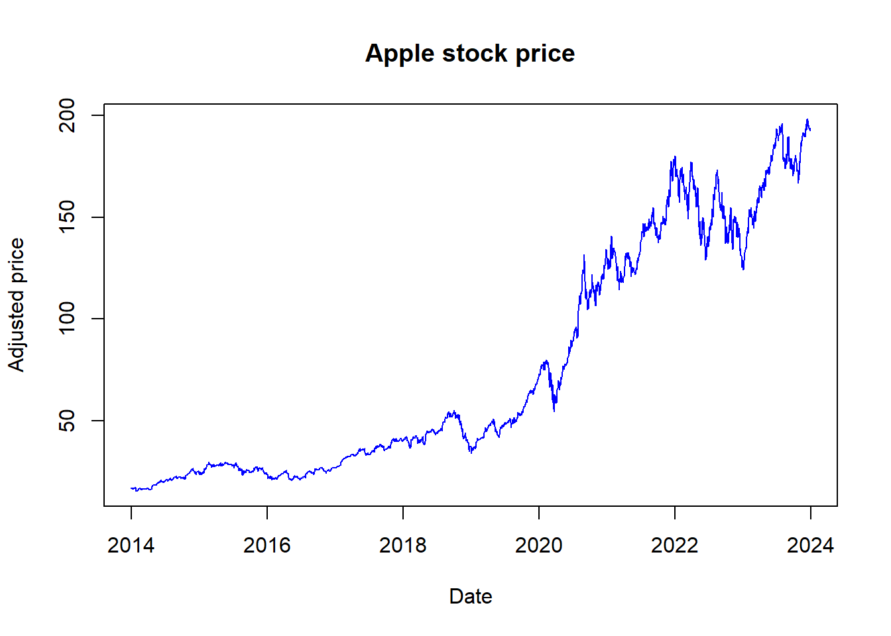
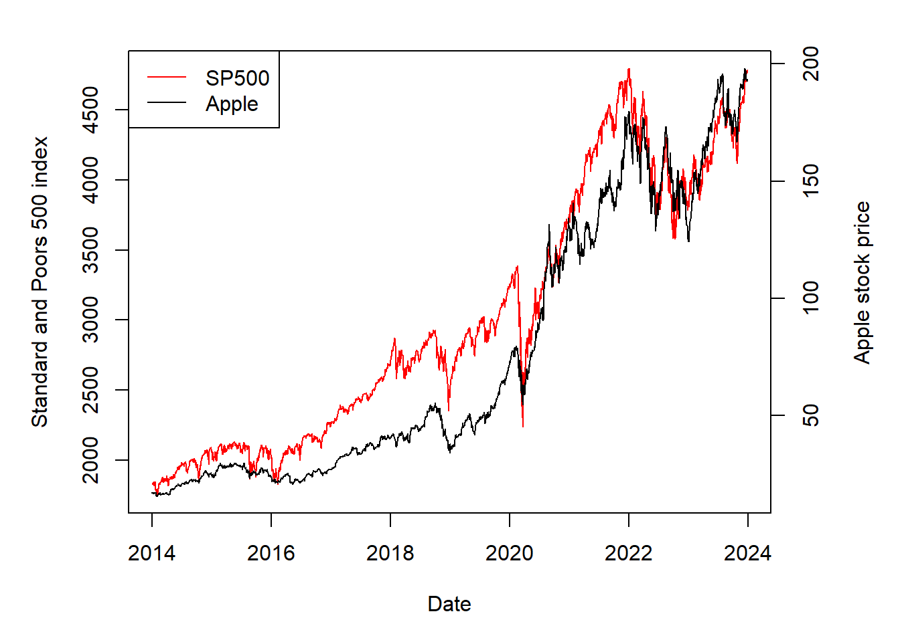
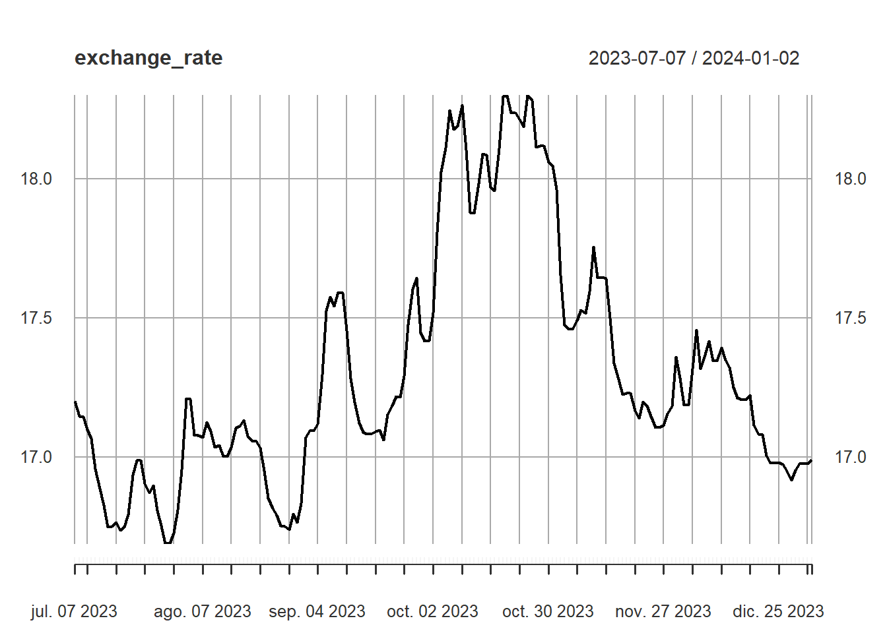
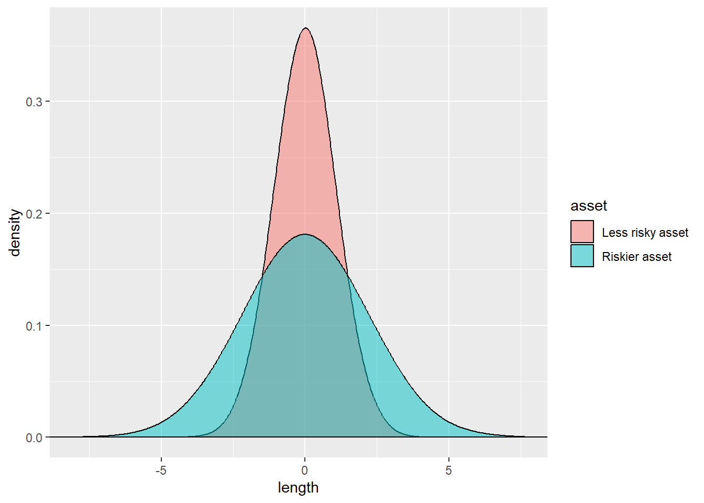
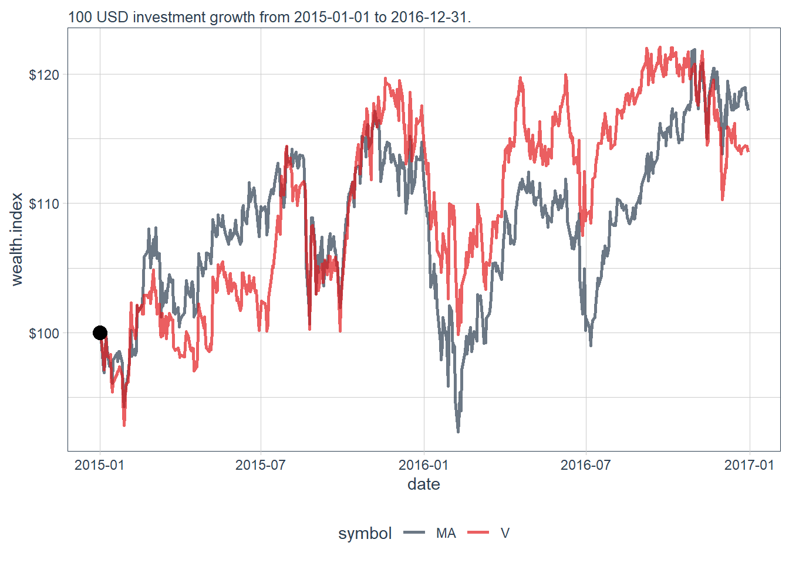

Code
[1] "There are 20249 R packages available in CRAN as of 2024-01-02"
Back to Quantitative Finance with


The main objective of this document is to show how to extract, visualize and analyze financial data in the context of asset pricing models, asset allocation models, a few financial econometrics techniques, and review some the most cutting edge technologies applications such as blockchain, using R. Here, we are interested in explaining concepts and real-life applications by developing examples that start from the data extraction, the problem statement, the proposed solution and the evaluation of the solution.
We start by explaining what finance is about and why we require to incorporate a programming language as a way to conduct financial analysis. Any quantitative analysis requires gathering and manipulating data at some initial step, so we continue by showing how to extract financial and economic information making special emphasis on stock market information and in data visualization. Then, we conduct some basic financial analysis based on the firm’s stock prices. Then, we move from analyzing prices to analyzing asset returns and we introduce the concept of financial risk. With these foundations, then we move into some asset pricing applications to understand what drives asset returns, we discuss the role of risk factors and how the estimation of asset pricing models can help us to make better financing and investment decisions. Given the relevance of future asset prices changes we also incorporate some foundations of asset prices forecast. Then, we introduce the portfolio analysis by showing how an investor could take informed decisions to optimize the performance of his or her investment portfolio, how to reduce risk by implementing diversification tools and financial algorithms, as well as evaluate investment strategies. Finally, we review the concept of blockchain and illustrate how it works. For starters, this technology uses data elements encrypted in blocks of computer code. The blocks are chained together across a shared ledger through cryptology. If someone tries to hack the ledger, it is immediately known by the involved parties and the chain falls apart. Blockchain has the potential to reshape processes that are defined inside finance, primarily because of its cost and control benefits.
According to (OECD 2020), developed and emerging countries and economies have become increasingly concerned about the level of financial literacy (ability to understand and properly apply financial management skills) of their citizens, including young people. This initially stemmed from concern about the potential impact of shrinking public and private welfare systems, shifting demographics, including the ageing of the population in many countries, and the increased sophistication and expansion of financial services. We all face financial decisions and we demand and offer financial services in this evolving context. As a result, financial literacy is now globally recognized as an essential life skill.
We all have different interests and incentives to learn finance. In finance we mainly study financing and investment decisions under uncertainty. Financing decisions are about looking for funds whereas investment decisions are about assigning funds to run a project. Thus, financing and investment are basically two sides of the same coin called project, business idea, firm, financial asset, countries, etc. A business project is a series of inputs, outputs, investment plans and tasks that need to be completed in order to reach a specific expected outcome in the future. Projects are uncertain by nature because many things can go wrong in the future: a firm might go bankrupt, a business idea can be stolen, sales projections might not be as good as expected, plans could change because of coronavirus pandemic, and so on. This is why we say that financing and investment decisions are taken under uncertainty. Finance decisions are taken today, but their results are seen or realized in the uncertain future. Risky projects and uncertain projects are not necessarily bad projects as uncertainty and risk boost innovation, demands a high-quality quantitative analysis, represent opportunities for entrepreneurs, and returns for investors.
An individual takes financing decisions in the job market, trying to get the maximum salary in the most convenient job to get the funds to pay for food, housing and leisure. This individual takes an investment decision when she decides to use her savings to start a small firm. If this firm performs well in the first year, then the firm will apply for a bank loan to finance a business expansion. Once the firm gets the new funds, the firm will have to invest this money wisely in productive assets, technology and hire experts in the relevant business field. As the firm generates profits, the owner who initially decided to risk her money will get returns. These returns may attract other investors willing to help the manager to export to other countries in exchange for some participation in the firm’s profits. When we replicate this in the economy many times, it is easy to understand how good finance and investment decisions directly contribute to the economic growth and indirectly to the economic development.
Finance can be applied by individuals and firms as illustrated above. Governments get funds from taxpayers to invest in public assets such as education, health, public infrastructure, etc. Governments also can contribute to create certainty about the stability of economic indicators and maintain a rule of law to stimulate private investment. If public spending remains higher than income, the country might fall into a public deficit and this could lead to financial instability which dampers not only public finances but personal and private investment decisions as well.
Most finance decisions are taken based on a risk-return analysis. In particular, if after doing the corresponding maths and consulting with the pillow you conclude that the expected return is higher than the associated risk, then you will most likely go for it. On the other hand, if the risk looks quite high compared with the expected return, you will surely re-think or abandon the project. We, as individuals, perceive the risk and the return differently, we may have biases, and we might not be that rational all the time. Consider the following real example. For each of the past 17 years, the All-England Lawn Tennis Club has paid for an insurance policy to guard against losses if Wimbledon should have to be cancelled in the event of a worldwide pandemic. This was considered for some as an excessive cost, a foolish strategy, until recently. Wimbledon received about £114 million because 2020 tournament was cancelled due to the coronavirus. A similar thing happens when you buy a used car. Surely the buyer considers the car cheap enough, and the seller considers the car price expensive enough to close the deal. So, it is sometimes good to have some sort of different perspectives about prices, risk and returns as this allows commercial and financial transactions to exist. We also perceive risk and return differently as we use different methods, data and procedures to estimate risk and return.
Although we all perceive risk and return differently by nature, we may also perceive the risk and return simply wrong by lack of knowledge. This is not uncommon as we may apply political decisions to finance problems, or make financial decisions without the relevant knowledge in the field, or ignoring the power of data analysis. Underestimating risks and overestimating returns may be as harmful as overestimating risk and underestimating returns. The first could lead to an excess of risk and the latter could lead to forego a good business. We are not suggesting everybody should become a finance expert, but finance professionals are expected to contribute to make better and correct financial decisions most of the times.
Finance is not a pure exact area of knowledge, it borrows some principles of physics and mathematics to develop financial models.1 For instance, we are sure that at standard atmospheric pressure, water boils at approximately 100 degrees Celsius. But we do not know for sure whether my business profits will grow at 10% next year. Returns are uncertain, this is why we call them expected returns. In fact, after doing some financial analysis, I can estimate that my profits will grow in the range of 5% to 15%, this range shows how uncertain my profits are. This is why returns and risk are two main pillars in finance. The ability of understanding the economic conditions, the market, and the firm will determine the success of financing and investment decisions. This means that finance requires some knowledge of economics, statistics, math, accounting, probability, marketing, psychology, and data science to transform data into intelligent decisions.
Finance is an area within economics. The Journal of Economic Literature (JEL) classification system is used to classify articles, dissertations, books, book reviews, and working papers in EconLit, and in many other applications. The JEL classify finance as financial economics and includes:
In this document we focus on only a few areas of finance: asset pricing, portfolio choice, financial forecasting, financial risk and risk management.
Every area of knowledge requires computers to conduct interesting analysis and applications. Traditionally, people use good commercials (and sometimes expensive) software such as Microsoft Excel, SPSS, STATA, E-Views, and many others. These commercial software are good alternatives. However, given that these programs are fully controlled by private firms who genuinely seek to create value for their shareholders, there is no guarantee that their associated file formats could be readable in the future, or even exist in the future, which negatively impacts reproducibility. Reproducibility is desirable as it helps to verify that results in a paper or report can be attained by a different research team, using the same methods. Learning and use R (or Python) for data analysis is a good way to attain repeatability and reproducibility. These computer languages are user-oriented and are created and constantly improved by a growing scientific community with an immense online presence to assist users.
R is a language and environment for statistical computing and graphics. R is a powerful integrated suite of software facilities for data manipulation, calculation and graphical display. R is available as Free Software under the terms of the Free Software Foundation’s GNU General Public License in source code form. It compiles and runs on a wide variety of UNIX platforms and similar systems (including FreeBSD and Linux), Windows and MacOS. Given its popularity and flexibility, R is currently implemented in virtually all areas of knowledge including finance by students, practitioners, researchers, universities, institutions, firms, think tanks, and policy makers around the world.
Many users think of R as a statistics system. We prefer to think of it as an environment within which statistical techniques are implemented. This is why R is a popular choice for finance and economic modeling. R can be easily extended via packages. There are about eight default packages supplied with the R distribution and many more are available through the CRAN family of Internet sites covering a very wide range of modern statistics, data science and finance applications.
Let’s see how many packages are there as today using R code by implementing the available.packages() function.
[1] "There are 20249 R packages available in CRAN as of 2024-01-02"Every R package has its own PDF online documentation and there are many online examples developed by users as well, you just have to Google it. Many times, we do not know how to deal with an error message, and we can find our way out by Google it.
R offers numerous advantages for data analysis compared with other alternatives like Microsoft Excel. R is free; it is easy to do reproducible research, self-documenting, repeatable; it is scalable, this is, applicable to small or large problems; there is a big and growing R online community by discipline and by region, including R-Ladies groups; Stack Overflow; plenty of learning resources; many R books and online resources. Finally, R is ‘becoming’ the new norm in data science and specifically in finance analysis. Even if you are interested in other languages like Python, at the end learning one language can help you to understand others.
Data is everywhere and finance has always been about data.2 Industries perceive data as an essential commodity and fuel to take decisions under uncertainty. As a matter of fact, data science and finance go hand in hand. Even before the term data science was coined, finance was using it. Data Science is widely used in areas like risk analytics, credit risk, fraud detection, risk management, pricing, and algorithmic trading. Financial institutions were among the earliest users and presumably pioneers of data analytics. We need data to perform financial analysis, estimate financial models, forecast financial variables, take financing and investment decisions, and more. The alternative of data is to listen to your guts, your intuition, or experience. This alternative is not bad by itself, but it would not be our main approach here.
Financial data is usually free and available in electronic sources for downloading. There are exemptions as private firms are not obligated to make their financial information public. Also, there are some kind of financial information that public firms are not obligated to make public given the international regulations. Sometimes, financial data is not fully available but we have summary statistics that can be quite useful to simulate the data by ourselves. Financial markets are a great source of financial information like exchange rates, commodities, financial instruments, etc. Public institutions and international organizations are useful sources of financial information as well. In any case, we have more financial data than time and resources to analyze it, and the gap is getting bigger and bigger.
Financial markets not only facilitate financial transactions between sellers and buyers, they also represent a rich source of financial data. Here, we show how to use R to download stock price data from financial markets by using a few examples.
R packages like quantmod and tidyquant make the process of downloading financial data to perform financial analysis very straightforward. The quantmod package for R is designed to assist the quantitative trader in the development, testing, and deployment of statistically based trading models. The tidyquant package is part of the so-called tidyverse, an opinionated collection of R packages introduced by Hadley Wickham and designed for data science. All tidyverse packages share an underlying design philosophy, grammar, and data structures.
There are plenty of YouTube tutorials showing how to install packages in R. This is one of them:
In the past, when we were interested in performing a financial analysis in a rudimentary statistical software, we had to open the financial market site, download the data in Excel or text format, and then convert it to a compatible format given the statistical software requirements. In ancient times, people had to gather financial data from the newspaper. Fortunately for us, now we have R packages to make this process not only easy but also free, extremely efficient and immediate.
Let’s download Apple stock prices in one step using the tq_get() function available in the tidyquant package.
We are done. The variable aapl_stock_prices contains Apple stock prices and other relevant information. Many things happened here in a very few steps. First, we need to have Internet access, R and R Studio working on our computer. Then, we load the tidyquant package. This package presumably integrates the best resources for collecting and analyzing financial data in R. The tq_get() function belongs to the tidyquant package, and tidyquant belongs to the tidyverse packages. Specifically, tq_get() connects to a default financial site, which in this case is the finance.yahoo.com and looks for the “AAPL” symbol which corresponds to Apple Inc. Finally, we store the data into aapl_stock_prices.
To see what it is inside the aapl_stock_prices object we can do the following.
tibble [2,516 × 8] (S3: tbl_df/tbl/data.frame)
$ symbol : chr [1:2516] "AAPL" "AAPL" "AAPL" "AAPL" ...
$ date : Date[1:2516], format: "2014-01-02" "2014-01-03" ...
$ open : num [1:2516] 19.8 19.7 19.2 19.4 19.2 ...
$ high : num [1:2516] 19.9 19.8 19.5 19.5 19.5 ...
$ low : num [1:2516] 19.7 19.3 19.1 19.2 19.2 ...
$ close : num [1:2516] 19.8 19.3 19.4 19.3 19.4 ...
$ volume : num [1:2516] 2.35e+08 3.92e+08 4.13e+08 3.17e+08 2.59e+08 ...
$ adjusted: num [1:2516] 17.3 16.9 17 16.9 17 ...According to the str() function output, aapl_stock_prices, we have 2516 daily observations for 7 variables. As you can see, we have not only prices but also volume. Let’s consider a different way to see and have a grasp of what it is inside aapl_stock_prices. In particular, we can see the first and the last part of this lengthy daily database.
The first observations.
# A tibble: 6 × 8
symbol date open high low close volume adjusted
<chr> <date> <dbl> <dbl> <dbl> <dbl> <dbl> <dbl>
1 AAPL 2014-01-02 19.8 19.9 19.7 19.8 234684800 17.3
2 AAPL 2014-01-03 19.7 19.8 19.3 19.3 392467600 16.9
3 AAPL 2014-01-06 19.2 19.5 19.1 19.4 412610800 17.0
4 AAPL 2014-01-07 19.4 19.5 19.2 19.3 317209200 16.9
5 AAPL 2014-01-08 19.2 19.5 19.2 19.4 258529600 17.0
6 AAPL 2014-01-09 19.5 19.5 19.1 19.2 279148800 16.8The last observations.
# A tibble: 6 × 8
symbol date open high low close volume adjusted
<chr> <date> <dbl> <dbl> <dbl> <dbl> <dbl> <dbl>
1 AAPL 2023-12-21 196. 197. 194. 195. 46482500 195.
2 AAPL 2023-12-22 195. 195. 193. 194. 37122800 194.
3 AAPL 2023-12-26 194. 194. 193. 193. 28919300 193.
4 AAPL 2023-12-27 192. 194. 191. 193. 48087700 193.
5 AAPL 2023-12-28 194. 195. 193. 194. 34049900 194.
6 AAPL 2023-12-29 194. 194. 192. 193. 42628800 193.By default, the tq_get() function downloads the latest set of data available. You can verify that the last date of aapl_stock_prices above approximately corresponds to the production date of this tutorial. If there is a difference it is simply because the stock market is still close or we are running the code in a weekend. In this case:
aapl_stock_prices observation: 2023-12-29.We also like to show the data in a plot.
We can add a few instructions to improve the format of our plot. In particular, \(x\) and \(y\) labels, the title, and the color of the line.

We can compare Apple versus a stock index like S&P500. Download the S&P500 index:
Plot both assets together.
par(mar = c(5, 5, 2, 5))
plot(SP$date, SP$adjusted, type = "l", col = "red",
ylab = "Standard and Poors 500 index",
xlab = "Date")
par(new = T)
plot(aapl_stock_prices$date, aapl_stock_prices$adjusted,
type = "l", axes = F, xlab = NA, ylab = NA, cex = 1.2)
axis(side = 4)
mtext(side = 4, line = 3, "Apple stock price")
legend("topleft",
legend=c("SP500", "Apple"),
lty = 1, col = c("red", "black"))
Let’s continue with the Apple stock analysis. Stock prices change throughout the trading day. This is, the open price changes every minute (sometimes in milliseconds), so the open price is normally different from the closing price. We can calculate the difference between the high and low price of each day and then show the result in a plot.
Create a new variable aapl_diff.
Plot the new variable.
The difference between high and low prices show that the stock price changes during a trading day. These changes can be considerably high. Moreover, this volatility has increased in recent times. Is it possible to know the exact date in which this difference is the highest? One alternative is to sort all observations, but there is a simpler approach.
Which observation has the maximum value of aapl_diff?
Consider the value of highest_change as an index. This is, the number of the row that contains the highest aapl_diff value. We can use this index to extract the date and the actual aapl_diff value.
Extract the date and the actual value of aapl_diff.
[1] "2020-09-04"The output above shows when Apple stock had its highest price change top in one day. We can use when and top variables to improve our plot.
Up to know, we have been using default options as we simply ask for stock prices of Apple without any other kind of instruction. As a result, we get data starting from 2010: tq_get("AAPL"). However, we can change default options if needed to get data back to 1990. I will take some online available examples developed by the author of tidyquant Matt Dancho.
Download Apple stock prices.
# A tibble: 8,565 × 8
symbol date open high low close volume adjusted
<chr> <date> <dbl> <dbl> <dbl> <dbl> <dbl> <dbl>
1 AAPL 1990-01-02 0.315 0.335 0.312 0.333 183198400 0.263
2 AAPL 1990-01-03 0.339 0.339 0.335 0.335 207995200 0.265
3 AAPL 1990-01-04 0.342 0.346 0.333 0.336 221513600 0.266
4 AAPL 1990-01-05 0.337 0.342 0.330 0.337 123312000 0.267
5 AAPL 1990-01-08 0.335 0.339 0.330 0.339 101572800 0.269
6 AAPL 1990-01-09 0.339 0.339 0.330 0.336 86139200 0.266
7 AAPL 1990-01-10 0.336 0.336 0.319 0.321 199718400 0.255
8 AAPL 1990-01-11 0.324 0.324 0.308 0.308 211052800 0.244
9 AAPL 1990-01-12 0.306 0.310 0.301 0.308 171897600 0.244
10 AAPL 1990-01-15 0.308 0.319 0.306 0.306 161739200 0.242
# ℹ 8,555 more rowsSometimes we are interested in periodicity aggregation from daily to monthly. We cannot transform from monthly to daily, but we can always transform from daily to monthly, monthly to yearly and so on. FANG is a dataset containing the daily historical stock prices for the FANG tech stocks, FB, AMZN, NFLX, and GOOG, spanning from the beginning of 2013 through the end of 2016.
Let’s aggregate the pre-loaded data from daily to monthly frequency.
# A tibble: 192 × 3
# Groups: symbol [4]
symbol date adjusted
<chr> <date> <dbl>
1 FB 2013-01-31 31.0
2 FB 2013-02-28 27.2
3 FB 2013-03-31 25.6
4 FB 2013-04-30 27.8
5 FB 2013-05-31 24.4
6 FB 2013-06-30 24.9
7 FB 2013-07-31 36.8
8 FB 2013-08-31 41.3
9 FB 2013-09-30 50.2
10 FB 2013-10-31 50.2
# ℹ 182 more rowsThe tidyquant package can also access other kinds of data from diverse sources like the Federal Reserve Economic Data (FRED). Federal Reserve Economic Data is a database maintained by the Research division of the Federal Reserve Bank of St. Louis that has more than 819,000 US and international time series from 110 sources. Consider the WTI Crude Oil Prices.
Download oil prices from FRED.
# A tibble: 2,605 × 3
symbol date price
<chr> <date> <dbl>
1 DCOILWTICO 2014-01-01 NA
2 DCOILWTICO 2014-01-02 95.1
3 DCOILWTICO 2014-01-03 93.7
4 DCOILWTICO 2014-01-06 93.1
5 DCOILWTICO 2014-01-07 93.3
6 DCOILWTICO 2014-01-08 91.9
7 DCOILWTICO 2014-01-09 91.4
8 DCOILWTICO 2014-01-10 92.4
9 DCOILWTICO 2014-01-13 91.4
10 DCOILWTICO 2014-01-14 92.2
# ℹ 2,595 more rowsNow that we have oil prices in basically one single step, we can plot them. It is interesting because recently the oil prices have turned negative in one day. Negative prices are rare but not impossible, especially in commodities.
Create a simple line plot to show the oil price evolution.
It is easy to find out the exact day when the oil price was negative. Extract one row given a price condition.
# A tibble: 1 × 3
symbol date price
<chr> <date> <dbl>
1 DCOILWTICO 2020-04-20 -37.0Without going into technical arguments, we can interpret negative prices as the following. Imagine, as it actually happened, that storing oil is expensive, not only that, imagine oil producers have no further physical space to store oil, so they are desperate to get rid of the oil production. On the other hand, oil buyers realize that the economic perspectives in the world look bad. If the economic activity suddenly stops, then we expect a lower demand for fuel including oil as firms are producing less. Then, producers want to sell and buyers are not interested to buy as they do not need as countries have more than enough inventories. This could go to the extreme in which producers are (sadly) willing to pay people in exchange of taking the oil out of their hands. This is why commodity prices can be negative.
There are other explanations, for example one related to the maturity of oil futures contracts. The price that went negative on Monday 2020-04-20 was for futures contracts to be delivered in May. Those contracts expired on Tuesday 2020-04-21. Upon expiration of the futures contract, the clearinghouse matches the holder of a long contract against the holder of a short position. The short position delivers the underlying asset to the long position. So, on Monday, traders — who were not equipped to take physical deliveries — were rushing to sell them to buyers who have booked storage.
The quantmod package can retrieve exchange rates as well.

We can show the time series information into a density plot.
We can also create some interesting visualizations about US employment and the US recessions (in the shaded area) over time. The code below is not so compact but it works.
# NBER Recession indicator and US nonfarm payroll employment
tickers<- c("USREC", "PAYEMS")
df <- tq_get(tickers, get = "economic.data", from = "1948-01-01")
# recession df (for plotting)
recessions.df = read.table(textConnection(
"Peak, Trough
1945-02-01, 1945-10-01
1948-11-01, 1949-10-01
1953-07-01, 1954-05-01
1957-08-01, 1958-04-01
1960-04-01, 1961-02-01
1969-12-01, 1970-11-01
1973-11-01, 1975-03-01
1980-01-01, 1980-07-01
1981-07-01, 1982-11-01
1990-07-01, 1991-03-01
2001-03-01, 2001-11-01
2007-12-01, 2009-06-01
2020-02-01, 2021-04-30"), sep = ',',
colClasses = c('Date', 'Date'), header = TRUE)
rec3 <- filter(df, df$symbol == "PAYEMS")
my_trans <- function(in.data,transform = "pctdiff3") {
switch(transform, logdiff = c(NA, diff(log(in.data))),
pctdiff3 = 100 * Delt(in.data, k = 3),
logdiff3 = c(rep(NA, 3), diff(log(in.data), 3)))
}
vlist <- c("PAYEMS")
df2 <- df |>
group_by(symbol) |>
mutate(x = ifelse(symbol %in% vlist, my_trans(price), price))
df2 |> select(-price) |>
spread(symbol, x) |>
mutate(REC12 = lead(USREC, 12)) -> df3
df41 <- filter(df3, year(date) > 1945)We have the data, now we can plot.
ggplot(data = df41, aes(x = date, y = PAYEMS)) +
geom_rect(data = recessions.df, inherit.aes = FALSE,
aes(xmin = Peak, xmax = Trough,
ymin = -Inf, ymax = +Inf),
fill = 'black', alpha = 0.3) +
theme_minimal() +
geom_line(color = "red", size = 1, alpha = 0.8) +
labs(x = "", y = "",
title = "US employment growth and recessions.",
subtitle = "Shaded area are NBER recessions.",
caption = "Source: US Bureau of Labor Statistics.
\nRetrieved from FRED, Federal Reserve Bank of St. Louis.") +
geom_hline(yintercept = 0) +
theme(plot.caption = element_text(hjust = 0),
plot.subtitle = element_text(face = "italic", size = 9),
plot.title = element_text(face = "bold", size = 14))Here we can see the magnitude of the current and upcoming financial and economic crisis. The fall in the US employment is impressive as you can see. Note how recessions (gray bars) are very closely related with falls in the employment over time.
Given the recent health crisis many sectors and firms in the US economy stopped or reduced operations as a way to reduce the spread of the virus. As firms produce less (or nothing), they sell less (or nothing). Firms face two kinds of costs, variable and fixed. Variable costs depend on production, so if production decreases the variable costs decreases as well. The problem here is fixed costs because they never disappear, they are fixed and they have to be paid no matter what. Some firms might have the possibility to pay fixed costs with reduced or null revenues for a while (days, weeks, probably a little bit more), but definitely not for long. I believe it is clear what happen next. Some firms did not make it, they could not survive and they simply went bankrupt and definitely closed operations. These firms had employees and now they are unemployed. Even those firms who are still operating, in some cases they had to reduce the payroll, and some employees are now unemployed. Less aggregate production and more families without an income reduce the aggregate supply and demand. This is why this current-next economic crisis has no precedent.
Having easy access to financial and economic data is important to facilitate the data analysis. However, it is even more important to be able to manipulate the financial and economic data correctly to communicate facts and discover new insights to make better decisions.
Technical analysis is the forecasting of future financial price movements based on an examination of past price movements and volume of trading. Technical analysis is applicable to stocks, indexes, commodities, futures or any tradable instrument where the price is influenced by the forces of supply and demand. This analysis is limited because it fails to incorporate other forces and factors that can influence the price of the security. Although this analysis is limited, it is still quite popular, and given that we now know how to get financial prices, it seems convenient to illustrate the basics of technical analysis.
Let’s use FANG data again.
Let’s begin with one plot.
The plot above represents closing prices. However, we also have open and close prices per day. We could take advantage of this by plotting vertical lines per day. The length of the daily vertical lines represents the difference between the open and close prices. To make it more informative, blue lines are those cases when the close price is greater than the open price, and red lines are those cases when the close price is lower than the open price.
There are some blank spaces. This is simply because the close price of yesterday is not always exactly the same as the open price of today. Local stock markets close on weekends and holidays.
These kinds of charts are difficult to read when we have many observations. Let’s do a zoom:
A formal interpretation is difficult given the limitations of this analysis. However, the main idea is the following. Consider the stock is increasing quickly, then it is believed that before a fall in the price, the stock will increase at a lower speed. Big blue bars are eventually followed by smaller blue bars before exhibiting a price fall (a red bar).3 The same logic can be applied the other way around. A dramatic fall in the price eventually reach a floor. This is, big red bars are eventually followed by smaller red bars before experiencing a price increase.
Could you guess what will happen with the price given the chart above? Seems difficult as the last four observations are consecutive blue-red-blue-red. Then, this indicator alone, without any complementary analysis, does not seem to deliver a clear trading signal.
Moving averages are supposed to anticipate price movements. The idea is the following. We have two line plots, one is the original evolution of the price chart in black and the second is the moving average in blue. In this case we have a 30-day moving average. The blue line is simply the average of the last 30-day stock prices. In the code below, this value is easily modified by changing the value of \(n\), in this case \(n=30\). The blue line (moving average) seems to anticipate what happens to the black line. The way we interpret the moving average is simple. If the black line crosses the blue from top to down in \(t\), then we are expected to anticipate a drop in the stock price in \(t+1\). In case the black line remains below the blue after \(t+1\), then we expect the stock price to keep falling in the following periods.
If the black line crosses the blue from down to top, then we are supposed to anticipate an increase in the stock price. The sign is stronger when the black line crosses the blue line showing a steeper slope. What happens in practice is that the value of \(n\) should be calibrated until we fit the moving average with the behaviour of the price stock. This indicator alone is far from being perfect as there might be a lot of contrary signals which might make it difficult to follow the interpretation as we explained above.
There is a price fall a few weeks before January 2016 and a few weeks after January 2016. This price fall was correctly anticipated by the moving average. Then the stock price increased a bit more than 110 USD, this was also correctly anticipated by the moving average. The period around July 2016 is less clear. By the end of the time-series, the black line is above the blue, so trying to follow our previous explanation this means that we should not expect a significant drop in the stock price.
# A tibble: 8 × 8
symbol date open high low close volume adjusted
<chr> <date> <dbl> <dbl> <dbl> <dbl> <dbl> <dbl>
1 AAPL 2016-12-30 29.2 29.3 28.9 29.0 122345200 26.9
2 AAPL 2017-01-03 29.0 29.1 28.7 29.0 115127600 27.0
3 AAPL 2017-01-04 29.0 29.1 28.9 29.0 84472400 27.0
4 AAPL 2017-01-05 29.0 29.2 29.0 29.2 88774400 27.1
5 AAPL 2017-01-06 29.2 29.5 29.1 29.5 127007600 27.4
6 AAPL 2017-01-09 29.5 29.9 29.5 29.7 134247600 27.7
7 AAPL 2017-01-10 29.7 29.8 29.6 29.8 97848400 27.7
8 AAPL 2017-01-11 29.7 30.0 29.6 29.9 110354400 27.9The Bollinger Bands are envelopes plotted at a standard deviation level above and below a simple moving average of the price. Because the distance of the bands is based on standard deviation, they are supposed to adjust to volatility swings in the underlying price. This indicator can help us to understand the size of the expected change in the future. If the Bollinger Bands become wider then we should expect drastic changes in the stock price.
AAPL |>
ggplot(aes(x = date, y = close, open = open,
high = high, low = low, close = close)) +
geom_line() +
geom_bbands(ma_fun = SMA, sd = 2, n = 30,
linetype = 2, size = 0.5, alpha = 0.2,
fill = palette_light()[[1]],
color_bands = palette_light()[[1]],
color_ma = palette_light()[[2]]) +
labs(y = "Closing Price", x = "") +
theme_tq()Let’s look at the very last observation. The price line is above the moving average (now in red, dotted line). This means that we should not expect a drop in the stock price in the following periods. However, the Bollinger Bands suggest that the price is currently very close to the upper bound, plus the upper bounds is also close to the historical maximum price at least in this plot. In sum, the last price is 115.82 USD and we do not expect a fall in the stock price according to the moving average and the expected price change is in the range of 107 to 119 USD approximately.
In case you may have a different view or concerns about the previous interpretation then you now realize the pitfalls and the disadvantages of this kind of analysis when it is conducted as a simple chart read. Although, the technical analysis is popular, it could lead to different interpretations easily when we interpret one or two indicators by eye. This does not mean we have to ignore this kind of analysis because we can always incorporate formal techniques to try to validate buy and sell signals to help traders and conduct short-run investment strategies. In fact, there are very serious developments like the quantstrat package, which provides a generic infrastructure to model and backtest signal-based quantitative strategies.
We can show the simple moving average for Facebook.
This suggests that the stock price will decrease in the near future. Let’s see if the moving average signal is correct.
# A tibble: 21 × 8
symbol date open high low close volume adjusted
<chr> <date> <dbl> <dbl> <dbl> <dbl> <dbl> <dbl>
1 FB 2014-01-02 54.8 55.2 54.2 54.7 43195500 54.7
2 FB 2014-01-03 55.0 55.7 54.5 54.6 38246200 54.6
3 FB 2014-01-06 54.4 57.3 54.0 57.2 68852600 57.2
4 FB 2014-01-07 57.7 58.5 57.2 57.9 77207400 57.9
5 FB 2014-01-08 57.6 58.4 57.2 58.2 56682400 58.2
6 FB 2014-01-09 58.7 59.0 56.7 57.2 92253300 57.2
7 FB 2014-01-10 57.1 58.3 57.1 57.9 42449500 57.9
8 FB 2014-01-13 57.9 58.2 55.4 55.9 63010900 55.9
9 FB 2014-01-14 56.5 57.8 56.1 57.7 37503600 57.7
10 FB 2014-01-15 58.0 58.6 57.3 57.6 33663400 57.6
# ℹ 11 more rowsThe moving average sent the right stock price movement signal.
An asset is any resource owned by a business or an economic entity. It is anything that can produce value (or returns) in the future. Here, we frequently use firm stocks as financial assets, but we also show other examples of assets such as commodities, currencies, bonds, derivatives, etc.
A return is the percentage change of an asset price. In finance, we are very interested in asset returns because it allows us to measure asset (like stocks) performance in relative terms. Consider the following example. In (1) I buy at $100 and sell at $110; and in (2) I buy at $10 and sell at $12. I make money in both situations because $110 > $100 and $12 > $10. But which situation is the best deal? In absolute terms, I made $10 in (1) and only $2 in (2). However, in relative terms I made 10% in (1) and a great 20% in (2).
The previous returns were calculated as a simple percentage change: \(\frac{\$110-\$100}{\$100}\) and \(\frac{\$12-\$10}{\$10}\) respectively. We can calculate log-returns instead and these are equivalent, and sometimes we prefer to calculate log-returns especially when we deal with short periods of time.
In this case the log-returns are \(Ln\left(\frac{\$110}{\$100}\right)\) and \(Ln\left(\frac{\$12}{\$10}\right)\) which are 9.53% and 18.23% respectively.
Both absolute and relative valuations ($10 versus $2, and 10% versus 20%) are important and valid depending on what we want to report. However, the good thing about the relative approach (percentages) is that we can compare among different alternatives more easily. Returns also have some relevant statistical properties (like stationarity) that are needed to implement some quantitative financial and econometrics models.
Returns can be expressed in relative terms with respect to the associated asset risk. Consider another example. In (1) I have an asset with an expected return of 5% with a risk of 5%; and in (2) a different asset with an expected return of 5% with a risk of 10%. So, in relative terms (1) is an asset with 1 unit of return per unit of risk and (2) is an asset with 0.5 unit of return per unit of risk. Now, it is clear we should prefer alternative (1).
There are more technical reasons to work with returns, but we can proceed with our analysis. Also, there are other ways to measure and report asset returns including different frequencies, cumulative returns, compounded returns, etc., but that is something we can discuss later.
We need time series of asset prices to calculate time series of asset returns. Let’s begin with a visual representation of the FANG database. Here, we have daily stock prices per stock.
See how stock prices fluctuate in different ranges. It would be a mistake to prefer Amazon or Google simply because they have larger price values compared with Facebook or Netflix. Taking investment decisions based on prices could be misleading because investors are most of the time looking for returns, and in particular for an attractive risk-return combination. The vertical axis is also problematic in the plot as it is difficult to see the price evolution clearly for each stock. In sum, we do not take investment decisions based on this kind of visual representation. If we are interested to evaluate the stock performance, we need a risk-return analysis, not a price chart.
Let’s add one line of code to see the price time-series more clearly.
Now it is clear that all stock prices have a positive trend over time. It is also clear that 2014 was a bad year for Amazon, Google and even Netflix. This is because the stock price decreased in the period of 2014-2015. The year 2015 was good for Amazon and Google. The main point is that this new visualization of the data can help us to compare the evolution of price per stock. Remember we still have prices and not returns. Stock returns are easily calculated in R.
Here, we first select adjusted prices, then transform into yearly returns.
# A tibble: 16 × 3
# Groups: symbol [4]
symbol date yearly.returns
<chr> <date> <dbl>
1 FB 2013-12-31 0.952
2 FB 2014-12-31 0.428
3 FB 2015-12-31 0.341
4 FB 2016-12-30 0.0993
5 AMZN 2013-12-31 0.550
6 AMZN 2014-12-31 -0.222
7 AMZN 2015-12-31 1.18
8 AMZN 2016-12-30 0.109
9 NFLX 2013-12-31 3.00
10 NFLX 2014-12-31 -0.0721
11 NFLX 2015-12-31 1.34
12 NFLX 2016-12-30 0.0824
13 GOOG 2013-12-31 0.550
14 GOOG 2014-12-31 -0.0597
15 GOOG 2015-12-31 0.442
16 GOOG 2016-12-30 0.0171This is what we call tidy data because (1) each variable forms a column; (2) each observation forms a row; and (3) each type of observational unit forms a table. These yearly returns are expressed in decimal notation. This means that 0.95 is in reality 95%.
The next chunk of code shows how to visualize the annual returns in a nice plot.
FANG_annual_returns |>
ggplot(aes(x = date-365, y = yearly.returns, fill = symbol)) +
geom_col() +
geom_hline(yintercept = 0, color = "black") +
scale_y_continuous(labels = scales::percent) +
labs(y = "Annual returns", x = "") +
facet_wrap(~ symbol, ncol = 2, scales = "free_y") +
theme_tq() +
scale_fill_tq() +
theme(legend.position = "none", legend.title = element_blank())Risky stocks like these are risky because the returns change drastically from time to time. Note that here, it is easy to see that 2014 was indeed a bad year for Amazon, Google and Netflix as we anticipate when looking at the price chart. These three assets confirm what we anticipate before because we see negative returns in 2014. The year 2015 was good for Amazon and Google as we said before.
The question that arises now is: What would be the result of investing money in each stock during these years (starting the first day of 2013 and finishing the last day of 2016)? Yearly returns show what happens from one year to another, but we cannot tell which stock would represent the best investment strategy in these years looking at this past information. Cumulative returns can be useful to answer this question.
Let’s start with a brief note about working with quantities affected by percentage changes. My salary is $100 and I manage to get a 5% increase. Then my new salary is \(\$100 \times (1+0.05) = \$105\). If I do \(\$100 \times 0.05 = \$5\) I only get the net increase, but what I care about is my new salary. Now I negotiate to change from full-time to part-time and agree to a salary decrease of 20%. Then, my current salary is \(\$100 \times (1+0.05) \times (1-0.2) = \$84\).
Imagine we invest $100 in Amazon for this period. Let’s calculate the value of our investment considering that we receive the four yearly returns listed and shown above. Remember the Amazon’s yearly returns from 2013 to 2016 are: 54.98%, −22.18%, 117.78%, 10.95% in this specific order.
# Investment in USD.
investment = 100
# Amazon's cumulative return in percentage.
AMZN_cum_percentage = (1 + 0.54984265) * (1 - 0.22177086) *
(1 + 1.17783149) * (1 + 0.10945565) - 1
# Amazon's cumulative return in USD.
AMZN_cum_usd = investment * (1 + AMZN_cum_percentage)
# Show results.
AMZN_cum_percentage[1] 1.914267[1] 291.4267The dollar value of $100 invested in Amazon at the end of the 4 years is $291.4267. The cumulative return is 191.4267%. For the sake of clarity, we can check these values are correct by applying this return over the $100: \(\$100 \times (1+1.914267) = \$291.4267\).
The 191.4267% cumulative return is usually not reported as it is here because it accumulates 4 years of returns. We normally express mean returns, in this case mean yearly return. The arithmetic mean of the returns, calculated by taking the sum of the returns and dividing by 4 is:
[1] 0.4038397Let’s reveal a problem with returns calculated as an arithmetic mean that it is sometimes disregarded. In our example, the arithmetic mean of returns is 40.38397% per year. Note that this could be misleading if we calculate the growth of a $100 investment for four years:
The long way.
[1] 388.3919The short way. ::: {.cell}
[1] 388.3919:::
See something strange? We know that the dollar value of $100 invested in Amazon at the end of the 4 years is $291.4267. However, taking this mean arithmetic return we have $388.3919. See how problematic this could be. I can say my $100 investment in Amazon during the past 4 years was great because I get a mean return of 40.38397% per year. People might think that my money grew from $100 to $388.3919 by the end of the fourth year, whereas in reality my money grew from $100 to $291.4267.
The way we reconcile this difference is by calculating a geometric mean return rather than an arithmetic mean return. A geometric mean is the \(n\)-th root of the product of \(n\) numbers. In particular:
[1] 0.3065689I can say my $100 investment in Amazon during the past 4 years was great because I get a mean (geometric) return of 30.65689% per year. People might think that my money grew from $100 to $291.4267 by the end of the fourth year, and this is correct. Let’s verify the procedure.
The long way.
[1] 291.4267The short way.
This phenomenon is an example of a result that is well known in mathematics. The geometric mean of a set of numbers is always less than the arithmetic mean (30.6 < 40.3). Although our arithmetic mean return of 40.38397% can lead to an overestimation of the investment dollar returns, we usually report mean returns. This is a common issue when reporting mutual funds returns as it is tempting to report arithmetic mean returns because they are higher. This is why in some jurisdictions, regulations require fund managers to report geometric mean returns instead, 30.65689% in this case.
For now, we will work with arithmetic returns. Let’s see How $100 investment growth each year per stock. Note that the plotted values are in USD.
# Yearly returns.
FANG_annual_returns <- FANG |>
group_by(symbol) |>
tq_transmute(select = adjusted,
mutate_fun = periodReturn,
period = "yearly",
type = "arithmetic")
# Cumulative returns.
FANG_annual_cum_returns <- FANG_annual_returns |>
mutate(cr = 100*cumprod(1 + yearly.returns)) |>
# Plot the results.
ggplot(aes(x = date-365, y = cr, fill = symbol)) + geom_col() +
labs(subtitle = "100 USD investment growth from 2013-01-01 to 2016-12-31.",
x = "", y = "USD value at the end of the year", color = "") +
scale_y_continuous(labels = scales::dollar) +
facet_wrap(~ symbol, ncol = 2, scales = "free_y") +
theme_tq() +
scale_color_tq() +
theme(legend.position = "none", legend.title = element_blank())
FANG_annual_cum_returnsPlease verify that the dollar value of $100 invested in Amazon at the end of the 4 years is $291.4267, as we discussed before.
We can also modify the code above to show monthly returns instead of yearly.
# Monthly returns.
FANG_monthly_returns <- FANG |>
group_by(symbol) |>
tq_transmute(select = adjusted,
mutate_fun = periodReturn,
period = "monthly",
type = "arithmetic")
# Plot the results.
ggplot(FANG_monthly_returns, aes(x = date-12,
y = monthly.returns, fill = symbol)) +
geom_col() +
geom_hline(yintercept = 0, color = "black") +
scale_y_continuous(labels = scales::percent) +
labs(y = "Monthly returns", x = "") +
facet_wrap(~ symbol, ncol = 2, scales = "free_y") +
theme_tq() +
scale_fill_tq() +
theme(legend.position = "none", legend.title = element_blank())By increasing the frequency from yearly to monthly we now have 12 observations per month instead of 1. Note that this new plot reveals how volatile these stock returns are. There is a negative return just the month after GOOG reached a positive 20% return. It looks hard to anticipate what will happen the next month since there is evidence that these returns change from positive to negative quite frequently.
Let’s see cumulative monthly returns per stock to extend our $100 investment example.
# Calculate monthly cumulative returns.
FANG_monthly_cum_returns <- FANG_monthly_returns |>
mutate(cr = 100 * cumprod(1 + monthly.returns))
# Plot results.
FANG_monthly_all <- FANG_monthly_cum_returns |>
ggplot(aes(x = date-12, y = cr, color = symbol)) +
geom_line(size = 1) +
geom_point(aes(x = as.Date("2012-12-31"), y = 100),
size = 4, col = "black", alpha = 0.5) +
labs(subtitle = "100 USD investment growth from 2013-01-01 to 2016-12-31.",
x = "", y = "USD value at the end of the month", color = "") +
scale_y_continuous(labels = scales::dollar) +
theme_tq() +
scale_color_tq()
FANG_monthly_allAlternatively, we can split the plot in four panels. This facilitates the reading of the plot.
Again, please verify that the dollar value of $100 invested in Amazon at the end of the 4 years is $291.4267, as we discussed before. Here, we can see the USD evolution of my investment every month.
Remember this plot?
Netflix stock price remains down all the time. However, $100 invested in Netflix during these 4 year would lead to the highest value of almost $1,000. This is why we should conduct a return analysis to make investment decisions.
Plotting prices and returns over time is revealing because we can see the evolution of the stock performance over time. It is useful because we could analyze what happens on specific dates to better understand the behaviour of stocks. Remember 2014 was a bad year for Amazon and Google, it would be interesting to investigate what went wrong then so we can better understand the determinants of the firm’s value.
Although time series plots represent a useful tool for financial analysis, it is not the only way we can show stock returns. Density plots forget about time and show the distribution of values. The height (vertical axis) represents how frequent a given return (horizontal axis) is. This approach is useful when we are interested to know the most likely return that the stock can have, how unlikely is to expect determined return values, how risky a specific stock return is.
Let’s visualize a density plot for the FANG data.
Note that monthly returns around zero are frequent, whereas monthly returns above 50% are very infrequent. Apparently, this 50% value is red, so this should be the case of Facebook. It is also noteworthy to mention that Netflix has the higher monthly return dispersion of all. If this is not clear enough, we can add one line to the code to make it clearer.
# Density plots.
ggplot(FANG_monthly_returns, aes(x = monthly.returns, fill = symbol)) +
geom_density(alpha = 0.5) +
geom_hline(yintercept = 0, color = "black") +
labs(x = "Monthly returns", y = "Density") +
xlim(-0.3, 0.9) +
theme_tq() +
scale_fill_tq() +
facet_wrap(~ symbol, ncol = 2) +
theme(legend.position = "none", legend.title = element_blank())Now, we have one density plot for each stock. Let’s analyze each plot.
Density distributions are useful to have an idea about the overall risk and return of assets as they summarize 48 observations (in this case 12 observations per year, \(12 \times 4\)). Some may argue 48 observations are not enough to conduct a financial analysis.
Here is another way to show the returns.
Now, let’s propose some statistical indicators to complement our previous analysis.
# A tibble: 4 × 5
symbol mean sd sr iqr
<chr> <dbl> <dbl> <dbl> <dbl>
1 AMZN 0.0257 0.0817 0.314 0.126
2 FB 0.0341 0.0989 0.345 0.108
3 GOOG 0.0176 0.0594 0.296 0.0646
4 NFLX 0.0592 0.167 0.355 0.193 The mean is basically a measure of an expected return of the stock. The stock with the lowest mean is GOOG and the highest is NFLX. This is consistent with our previous graphical analysis. GOOG expected return is very close to zero, whereas NFLX expected return is definitely higher as the highest value corresponds to a positive return. The standard deviation sd is a measure of how disperse are the returns or in financial terms, how risky are the returns. The stock with less risk is GOOG and the stock with highest risk is NFLX. This is also consistent with our previous graphical analysis. IQR is the interquartile range which is the first quartile subtracted from the third quartile.
Comparing return and risk, or mean and standard deviation of stock returns can be troublesome. This is because the relationship between risk and return is not perfectly proportional.
Let’s see the risk and return in a plot.
# Mean variance plot.
FANG_stats |>
ggplot(aes(x = sd, y = mean, color = symbol)) +
geom_point(size = 5) +
geom_text(aes(label = paste0(round(sr, 3))),
vjust = 2, color = "black", size = 3.5) +
xlim(0.04, 0.18) +
ylim(0.01, 0.06) +
labs(subtitle = "Numerical values represent return per unit of risk.",
x = "Risk", y = "Expected return") +
theme_tq()According to our results, Netflix is the stock with the highest return and risk. Does this mean Netflix has the highest return per unit of risk? This is easy to find out by dividing the mean by the standard deviation. This indicator is called sr in the table above. According to this, Netflix has the highest return per unit of risk compared with the rest of the stocks. This is clearly consistent with our previous analysis of cumulative returns.
The plot above measures returns in \(y\)-axis and risk in \(x\)-axes. In finance, we call this a mean-variance approach as mean is the measure of return and variance, or its square root the standard deviation, is the measure of risk. The mean-variance approach was a breakthrough in finance because we can clearly compare any kind of assets under the basis of risk and return.
Imagine stock 1 has a return of 5% and a risk of 4%, whereas stock 2 has a return of 6% and a risk of 8%. Although stock 2 has a higher return, this return does not compensate for the increase in the risk. In particular stock 1 has a 1.25 return per unit of risk (5/4), and stock 2 has a 0.75 return per unit of risk. In this case, we would prefer to invest our money in stock 1. Again, the relative values are useful to make decisions. Here the relative value is stock return per unit of risk.
Note how we can differentiate between a less risky and a riskier asset returns by looking at their correspondent distributions. Let’s highlight these principles by using a brief example. Below we simulate a couple of asset returns by generating random values. Both artificially created assets have the same return of 0% and one is riskier than the other.
# Create random assets.
less_risky <- data.frame(length = rnorm(10000, 0, 1))
more_risky <- data.frame(length = rnorm(10000, 0, 2))
# Name random assets.
less_risky$asset <- 'Less risky asset'
more_risky$asset <- 'Riskier asset'
assets <- rbind(less_risky, more_risky)
# Plot the assets.
ggplot(assets, aes(length, fill = asset)) +
geom_density(alpha = 0.5, adjust = 3) +
geom_hline(yintercept = 0)
The risky asset can take a wider range of returns. In particular, the risky asset can take values ranging approximately from −7% to +7%, whereas the less risky asset about −3% to +3%. In the code above we ask R to generate 10,000 random values following a normal distribution with mean zero, and a standard deviation of 1% and 2% for the less and riskier asset respectively.
The aim of asset pricing theories is to determine the fundamental value of an asset. There is a close relation between this fundamental value and an appropriate return. Then, the main focus of asset pricing theories and models is to determine this appropriate return. Most models relate expected returns to risks investors have to bear and have to be compensated for. They differ mainly in the risk factors they allow to enter into the model.
Although a large number of risk factors have been proposed in the literature and many models are used, none of the presented models or any other models used by practitioners are able to explain the observed asset prices or returns sufficiently. While most models work quite well for time horizons of more than a year, they fail in explaining short term movements.
What drives asset return changes? This is a big question in finance. Stock returns change as expectations of the stock market participants (buyers and sellers) change. Good or positive expectations can be interpreted as an opportunity for investors to buy now looking to generate a profit in the future. Positive expectations could increase the demand for this stock, the stock price increases and the return increases as well. Negative expectations could increase the supply for this stock as stock market participants are now willing to sell the stock before the stock price falls. An increase in the supply decreases the stock price and the return. In practice, supply and demand of a given stock change at the same time and at different magnitudes most of the time, so it is not easy to explain and anticipate changes in asset returns.
Expectations are fueled by information, and information comes from data analysis in many forms including business news, macroeconomic news, new financial information of the firm available, market conditions, rumors, fake news, tweets, and many more. This data is subject to a wide variety of financial analysis and models, so it is not uncommon that one investor anticipates a price fall whereas others anticipate a price increase. Again, it is not easy to explain and anticipate changes in returns as measuring expectations seems like a complicated task. We can argue that changes in risk factors change expectations so risk factors drive changes in asset returns. Let’s elaborate more on these risk factors.
Consider an extreme example about what we mean by explaining and anticipating changes in stock returns. Let’s say someone has been awake for the last 24 hours and is driving after drinking too much alcohol. Here, we have two well known risk factors that can anticipate and explain a potential car accident. Anybody under any circumstances is exposed to a car accident, but here there are two very clear risk factors that explain and anticipate a potential car accident. Knowing the relevant and most important risk factors is important because we can teach young people how to avoid car accidents and if we do it very well, we could even decrease the rate of car accidents. There might be many risk factors but surely there are some more significant than others. Consider driving while listening to music at a high volume. I think it is not crazy to assume that driving drunk is more dangerous than driving while listening to music at a high volume. It sounds reasonable to assume that adding two risk factors like lack of sleep and alcohol increases the chances of a car accident significantly.
Asset pricing and financial econometrics are usually combined in order to find out the risk factors of stock return changes (among other things). A typical risk factor is firm size. In particular, there is some evidence that suggests that small firms have higher returns than big firms. The industry is also considered as a risk factor as there are some industries which exhibit consistently lower returns than others. There are also some financial ratios that can be interpreted as risk factors for stock returns. In sum, we have some understanding of the risk factors of stock returns but we still need to learn more about this topic.
Why are we interested to explain and anticipate changes in stock returns? Remember the value of stocks are directly related with firm’s equity, and firm’s equity with firm size and performance. In finance and economics, we are interested that firms can grow and perform well because they represent not only a supply for goods and services but they also represent new job opportunities. The population in most countries is increasing so we need more and better job opportunities. As long as more families can get more and better job conditions they could (if other conditions hold) increase their living standards. Firms are also a source of innovation, research and knowledge so they play a very important role in the economy. Therefore, as long as we understand what drives stock returns can help us to understand the evolution of the whole economy and this is closely related with the people’s standards of living. At the end, we should care about the firm performance not because we are interested in having money machines, but because we should aim to transform this value increase into better living conditions for families.
Firms are not always good for the economy. Firms are run by individuals and individuals can be greedy sometimes. Firms can also make wrong decisions because they simply fail to conduct a correct analysis. Just before the US credit crunch 2007-2008 crisis, banks were interested in allocate sub-prime mortgages in order to transform them and sell them as new assets called asset back securities. This securitization process allowed banks to sell the credit risk to others in a not so transparent process and mechanism. Let me explain. Every mortgage represents an account payable for the bank because a family is expected to pay for that loan. Accounts payable are boring in the sense that you have to wait until you get paid, plus they are risky because families may default. By implementing a securitization, the bank can literally collect plenty of accounts payable or sub-prime mortgages and create one single new asset that can be sold. If you buy this asset you will have to pay the bank an amount of money today, in exchange you will get future payments for a number of years in the future. You might be interested in this deal because the future payments are attractive compared with the price of this new asset.
What happened then was that the borrowers default, sub-prime mortgages were not paid, asset back securities investors lost their money, and we fall into a global recession. This is relevant for us because credit rating agencies failed to assign a good estimate of the risk of asset back securities. In particular, they reported that these assets had a very high credit rating whereas in reality they were basically junk in the form of sub-prime mortgages. In some cases, they reported the same credit rating as bonds, and this is just crazy. This missvaluation (or overvaluation) of the asset back securities motivated people to invest in these assets as they believed they were a bargain (high return and low risk assets), but in reality, they were simply high return and very high risky assets. This is why we need to understand what drives asset returns. And this is also why we argue that firms are not always good for the economy.
Let’s come back to our main objective which are the stock returns drivers, and apply a simple approach to start. We know that there are certain stocks that behave similarly. Consider Mastercard and Visa. Visa and MasterCard are the two largest payment processing networks in the world, they do not issue cards directly to the public, as do Discover and American Express, but rather through member financial institutions. Therefore, it is easy to understand that these two firms belong to the same industry, and they are exposed to very similar risk factors at the same time. In principle, if these firms are similar, their respective stock returns might behave similar as well. We may argue that the change of the returns of one can be explained by the change of the returns of the other.
Let’s see how similar these two firms are by looking at their respective cumulative returns in a similar way as we did with FANG stocks. We first download the price data.
Then transform prices into cumulative returns and plot them.
# Transform prices into log returns.
stock_cumret_MA_V <- stock_prices_MA_V |>
tq_transmute(adjusted,
periodReturn,
period = "daily",
type = "log",
col_rename = "returns") |>
# Create the wealth index.
mutate(wealth.index = 100 * cumprod(1 + returns))
# Visualize the wealth index.
ggplot(stock_cumret_MA_V, aes(x = date, y = wealth.index, color = symbol)) +
geom_line(size = 1, alpha = 0.7) +
geom_point(aes(x = as.Date("2015-01-01"), y = 100),
size = 4, col = "black", alpha = 0.5) +
labs(subtitle = "100 USD investment growth from 2015-01-01 to 2016-12-31.") +
theme_tq() +
scale_color_tq() +
scale_y_continuous(labels = scales::dollar)
Apparently, these stock returns are indeed closely related. Ups and downs are very similar in this time-series. These are the exact values:
# A tibble: 6 × 3
date MA V
<date> <dbl> <dbl>
1 2016-12-22 118. 114.
2 2016-12-23 119. 114.
3 2016-12-27 119. 114.
4 2016-12-28 118. 114.
5 2016-12-29 118. 114.
6 2016-12-30 117. 114.The 100 USD investment growth is basically the same in both assets by the end of the investment period.
Let’s see the daily returns of both stocks in a scatter plot now. This allows us to confirm if both stock returns are related.
# Show the return relationship.
stock_ret_MA_V <- stock_prices_MA_V |>
tq_transmute(select = adjusted,
mutate_fun = periodReturn,
period = "daily",
type = "log",
col_rename = "returns")
ggplot(stock_ret_MA_V, aes(x = date, y = returns, group = symbol)) +
geom_line(aes(color = symbol), alpha = 0.6) +
labs(subtitle = "Not very clear, right?") +
theme_tq()+
scale_y_continuous(labels = scales::percent)The line plot was not a good idea to show our main point which is to reveal whether these two stock returns are related. You cannot see anything clear here. Only ups and downs with no clear visual pattern. Let’s propose a different way to illustrate the relationship of stock returns.
Dropping the time (or the date) and plotting coordinates looks better. The scatter plot above suggests that if Visa stock returns are low, Mastercard stock returns are low as well. By the same token, if Visa sock returns are high, Mastercard stock returns are high as well. We have 504 points; every point represents a pair of daily returns of both firms. Stock returns are then positively related, and this relationship seems to be strong and linear. We can add one line to the above plot to summarize this linear relationship between the 504 stock return pairs.
Note that this straight line summarizes quite well the relationship between the stock returns. This is, most of the points lie very close to the straight line. The general equation of a straight line is \(y = a + bx\), the value \(a\) is called intercept and \(b\) is the line slope. The slope measures how steep the line is, the higher the slope the steeper the line. We care about the slope because it measures how related are \(x\) and \(y\). In particular, a slope of zero means that there is no relationship between \(x\) and \(y\), whereas a slope of 1 means that if \(x\) increases 2, then we should expect \(y\) increases by 2 as well. The slope is interesting because it is the magnitude of the relationship between \(x\) and \(y\). The sign of \(b\) reveals whether the relationship is positive or negative. According to the above plot, we can anticipate that the slope \(b\) is positive and it should be close to 1.
In this case, the general model is \(MA_i = \alpha+\beta V_i\), where \(i=1,...,504\) as we have 504 observations of \(MA\) and \(V\) stock returns. It is easy to estimate the values of \(\alpha\) and \(\beta\) by conducting a simple regression analysis. The regression analysis basically finds out the values of \(\alpha\) and \(\beta\) that fits better the observed relationship between \(MA\) and \(V\).
Call:
lm(formula = MA ~ V, data = reg)
Residuals:
Min 1Q Median 3Q Max
-0.0269569 -0.0039657 0.0002147 0.0039656 0.0289462
Coefficients:
Estimate Std. Error t value Pr(>|t|)
(Intercept) 0.0001130 0.0003097 0.365 0.715
V 0.8133658 0.0226393 35.927 <2e-16 ***
---
Signif. codes: 0 '***' 0.001 '**' 0.01 '*' 0.05 '.' 0.1 ' ' 1
Residual standard error: 0.00695 on 502 degrees of freedom
Multiple R-squared: 0.72, Adjusted R-squared: 0.7194
F-statistic: 1291 on 1 and 502 DF, p-value: < 2.2e-16In general our model is \(MA_i = \alpha+\beta V_i\), and in particular we have our model estimation result as \(MA_i = 0.0001130+0.8133658 V_i\). Without going into details, our linear regression analysis suggests that a 1% return on \(V\) is associated with a 0.8133658% return in \(MA\). This is a good fit of the observations.
Let’s evaluate one example.
# A tibble: 1 × 3
date MA V
<date> <dbl> <dbl>
1 2015-04-22 0.0383 0.0399Consider the observation pair \(V=0.03989731\), \(MA=0.03833513\). According to our regression line, the value of \(MA\) at \(V=0.03989731\) should be \(MA = 0.0001130 + 0.03989731 \times 0.8133658 = 0.03256411\). The difference between the observed 3.833513% and the estimated 3.256411% is the estimation error. Note that the observed value is higher than the estimated value, this is the observation is slightly above the blue regression line.
Our results suggests that Visa represent a risk factor of Mastercard. This is because according to our model Mastercard return changes can be explained by changes in Visa returns. The relationship between this pair of stock returns according to beta is almost perfect as 0.8133658 is close to 1. We can also calculate the correlation of both stock returns. The correlation (or Pearson correlation) is a statistic that measures linear correlation between two variables. It has a value between +1 and −1. A value of +1 is total positive linear correlation, 0 is no linear correlation, and −1 is total negative linear correlation. The beta is similar but it could be higher than +1 or lower than −1.
In this case, the correlation of Visa and Mastercard stock returns is 0.8485187. This correlation value is very close to 1, so these variables are strongly linear correlated. This is important because we can argue that these two stocks are very similar, if one increases the other increases and if one decreases the other decreases. This behaviour makes sense because as we said before these firms are exposed to the same (or very similar) risk factors.
Let’s visualize a 1:1 relationship just as a reference in the red line below.
The strength of this fit can be measured by the R-squared. The R-squared value can be interpreted as the variation of \(MA\) explained by variations of \(V\). In particular, almost 72% of the variations of \(MA\) is explained by variations in \(V\). The rest (about 28%) remains unexplained according to the model. This 28% could be explained by adding more risk factors to the asset pricing model, or proposing an alternative estimation method.
Our example assumed that \(MA\) can be explained by \(V\). We have not introduced a formal model so we are free to relax this assumption and turn it around. What if we assume Visa depends on Mastercard? Note that the results are not so different.
Call:
lm(formula = V ~ MA, data = reg)
Residuals:
Min 1Q Median 3Q Max
-0.034372 -0.003965 -0.000032 0.003423 0.035420
Coefficients:
Estimate Std. Error t value Pr(>|t|)
(Intercept) -1.104e-06 3.231e-04 -0.003 0.997
MA 8.852e-01 2.464e-02 35.927 <2e-16 ***
---
Signif. codes: 0 '***' 0.001 '**' 0.01 '*' 0.05 '.' 0.1 ' ' 1
Residual standard error: 0.00725 on 502 degrees of freedom
Multiple R-squared: 0.72, Adjusted R-squared: 0.7194
F-statistic: 1291 on 1 and 502 DF, p-value: < 2.2e-16Here, we estimate \(V_i = \alpha+\beta MA_i\), and in particular we have \(V_i = -1.104 \times 10^{6}+0.8852 MA_i\).
The relationship of the risk-return trade-off is the heart of equilibrium asset pricing theories and models. The asset pricing theories are fascinating as they allow us to go deeper in the understanding of the determinants of asset returns. Here, we will skip many aspects regarding the theory, derivation, assumptions and comparison of asset pricing models, theories and estimation approaches. Here, we motivate the main ideas underlying the asset pricing models, the underlying programming approach, and what can we learn from them.
What if we propose that the return of an individual asset is partially explained by the market return? This proposal is similar as if we assume that the education level of one individual depends on the education level of the whole country. Or the expectation of life of one individual depends on the average expectation of life of the whole country. This proposal seems reasonable although not perfect. The market return is an aggregation of all individual asset returns traded in the stock market. There are several ways we can estimate the market return. One of them is to calculate the return of a stock index like the S&P500. The S&P500, or simply the S&P, is a stock market index that measures the stock performance of about 500 large companies listed on stock exchanges in the United States. It is one of the most commonly followed equity indexes, and many consider it to be one of the best representations of the US stock market.
Market indexes as the S&P500 are important for several reasons. We have discussed that stock price evolution is a good way to track the performance of a single company. However, we are usually interested in evaluating the performance of all the companies in the market, not only one or two. Stock market indexes are formed by several firms or in some cases many participants known as constituents. There is a wide variety of stock market indexes, some are country specific, or based on industries and other firm characteristics. By looking at the price or index evolution of these indexes we can track what happens with the firms in an aggregate approach. Then, an index value change in a day show what happened with the firms in average in that specific day. If the S&P500 increases in one day then we interpret this as if most of the firms that participate in the S&P500 increased its value in that particular day.
Let’s conduct a regression analysis as before. Now the model is \(stock_{i,j} = \alpha_i + \beta_i SP500_j + \epsilon_i\), where sub-index \(i\) represents a given stock, and \(j\) the historical observations. Note that this model is very similar as the general equation of a straight line is \(y = a + bx\). The model \(stock_{i,j} = \alpha_i + \beta_i SP500_j + \epsilon_i\) is basically the single-index-model. It is called single because we assume there is only one risk factor which in this case is the market return. There are other multi-factor models that adds more factors (like factor F for example) and they look like this: \(stock_{i,j} = \alpha_i + \beta_i SP500_j + \delta_i F_j + \epsilon_i\).
According to the single index model, the stock return is decomposed in three parts: a constant return \(\alpha_i\), a component proportional to the market index \(\beta_i SP500_j\), and a random and unpredictable component \(\epsilon_i\). The intercept term is the expected value of the component of security \(i\)’s return that is independent of the market’s performance. The beta coefficient is specific for each security and measures the security’s sensitivity to the market. The random component represents the deviation of the return on the security from its expected value. The single-index model says that risks of individual securities arise from two sources: market or systematic risk，reflected in \(\beta_i SP500_j\) and firm-specific risk，reflected in \(\epsilon_i\). This simple dichotomy may oversimplify factors of real world uncertainty. For example，it ignores industry events，which affect many firms within a single industry but do not influence the macroeconomy as a whole.
Let’s estimate the single-index model. Here, we have selected 10 stocks, \(i=1,...10\), and 72 monthly returns observations \(j=1,...,72\). Our main estimation objective is to find \(\alpha_i\) and \(\beta_i\) for these 10 stocks.
First, we download the corresponding 10 monthly stock returns.
# Download individual asset returns.
R_stocks <- c("NEM", "AMCR", "CLX", "PEAK", "KR", "TXN", "F", "TXT",
"KLAC", "TEF") |>
tq_get(get = "stock.prices", from = "2010-01-01",
to = "2015-12-31") |>
group_by(symbol) |>
tq_transmute(select = adjusted,
mutate_fun = periodReturn,
period = "monthly",
col_rename = "R_stocks")
R_stocks# A tibble: 692 × 3
# Groups: symbol [10]
symbol date R_stocks
<chr> <date> <dbl>
1 NEM 2010-01-29 -0.115
2 NEM 2010-02-26 0.150
3 NEM 2010-03-31 0.0355
4 NEM 2010-04-30 0.101
5 NEM 2010-05-28 -0.0403
6 NEM 2010-06-30 0.149
7 NEM 2010-07-30 -0.0946
8 NEM 2010-08-31 0.0970
9 NEM 2010-09-30 0.0268
10 NEM 2010-10-29 -0.0310
# ℹ 682 more rowsThen, we download the S&P500 monthly returns, the symbol is ^GSPC.
# A tibble: 72 × 2
date R_market
<date> <dbl>
1 2010-01-29 -0.0522
2 2010-02-26 0.0285
3 2010-03-31 0.0588
4 2010-04-30 0.0148
5 2010-05-28 -0.0820
6 2010-06-30 -0.0539
7 2010-07-30 0.0688
8 2010-08-31 -0.0474
9 2010-09-30 0.0876
10 2010-10-29 0.0369
# ℹ 62 more rowsNow, we join R_stocks and R_market in the same variable or R object. This is convenient in the estimation procedure.
# A tibble: 692 × 4
# Groups: symbol [10]
symbol date R_stocks R_market
<chr> <date> <dbl> <dbl>
1 NEM 2010-01-29 -0.115 -0.0522
2 NEM 2010-02-26 0.150 0.0285
3 NEM 2010-03-31 0.0355 0.0588
4 NEM 2010-04-30 0.101 0.0148
5 NEM 2010-05-28 -0.0403 -0.0820
6 NEM 2010-06-30 0.149 -0.0539
7 NEM 2010-07-30 -0.0946 0.0688
8 NEM 2010-08-31 0.0970 -0.0474
9 NEM 2010-09-30 0.0268 0.0876
10 NEM 2010-10-29 -0.0310 0.0369
# ℹ 682 more rowsWe can use the tq_performance() function to facilitate the regression analysis estimation.
# A tibble: 10 × 4
# Groups: symbol [10]
symbol Alpha Beta `R-squared`
<chr> <dbl> <dbl> <dbl>
1 NEM -0.0084 0.155 0.0032
2 AMCR 0.0035 0.415 0.0748
3 CLX 0.0097 0.434 0.195
4 PEAK 0.0052 0.448 0.0965
5 KR 0.0165 0.713 0.215
6 TXN 0.0032 1.27 0.575
7 F -0.0032 1.39 0.400
8 TXT 0.0009 1.64 0.431
9 KLAC 0.0024 1.74 0.541
10 TEF -0.0172 1.50 0.446 Here, we have the results for the single-index model estimation for the 10 stocks.
Please note how we arrange the stocks according to the beta. We have stocks \(\beta\) from 0.15 to 1.74. We interpret this as the riskiness of the stock with respect to the market. The stock NEM has the lowest risk with respect to the market. In other words, stocks with low betas are less exposed to changes in the S&P500 this is why we argue that are not risky with respect to the market. Stocks with low betas might be exposed to other risk factors, but not the market. On the other hand, stocks with high betas like TEF are highly exposed to changes in the S&P500 this is why we argue that are risky with respect to the market. The beta of TEF is actually higher than 1, which means that TEF react more than proportional with respect to changes in the stock market.
We need a deeper econometric analysis to validate our interpretations. Here, we are not going to deal with a formal econometric interpretation but we can propose some arguments to better understand the stock behaviour. Alphas are all very close to zero. The R-squared is also relevant as it shows what proportion of changes in the stock returns are explained by changes in the stock market. Note that 57% of TXN stock return changes are explained by changes in the S&P500.
We can illustrate the previous results in a graphical way.
R_stocks_market$symbol <-
factor(R_stocks_market$symbol, levels =
unique(R_stocks_market$symbol))
# Plot all results.
R_stocks_market |>
ggplot(aes(x = R_market, y = R_stocks, color = symbol)) +
geom_point(alpha = 0.4) +
geom_smooth(method = "lm", se = FALSE, size = 2) +
facet_wrap(~symbol, ncol = 5) +
geom_abline(intercept = 0, color = "black", linetype = 1) +
theme_minimal() +
labs(x = "SP500 return", y = "Asset return") +
theme(legend.position = "none", legend.title = element_blank())The stocks are sorted in such a way that the slope is increasing. I added a black line which represents a \(\beta = 1\) to illustrate the cases in which the stock is less risky than the market and riskier than the market. The \(y\)-axis represents the asset returns and the \(x\)-axis the S&P500 returns.
We are interested in these results for a variety of reasons. Consider the following example. Imagine I am currently investing in the stock market and I anticipate a fall in the stock market. Some investors would prefer to sell their positions but imagine I need or want to stay for any reason. If so, then I might consider rearranging my portfolio investment to include more stocks with low betas (probably even negative betas). By doing so and if I was right with respect to the S&P500, then my position would not be severely affected because my portfolio is now more independent to the evolution of the stock market. On the other hand, if I anticipate given my analysis that the stock market will rise, then I could rearrange my portfolio to include more stocks with high betas (even higher than 1). By doing so and if I was right with respect to the S&P500, then my position would improve because my portfolio would generate more return, even more than the S&P500 itself.
In practice, we have to conduct a series of formal statistical tests to rely on our estimated betas. In particular, we are interested to have a statistically significant estimator among other things. Things might become complicated when you know that there are many ways in which we can estimate betas. Even if we take a different historical dataset length, we can get different betas. Is we take a different market benchmark we can get different betas. Financial sites usually report betas of the stock, and sometimes it is difficult to find out what was the process of estimating the model. Then, these kinds of estimations have to be done by a professional in the area. My recommendation is to study asset pricing theory and relevant financial econometric techniques to propose these kind of investment recommendations. Our previous interpretation assumes we have correctly estimated betas.
The Capital Asset Pricing Model (CAPM) was created by William Sharpe in 1964, see Sharpe (1964). He won the 1990 Nobel Prize in Economic Sciences, along with Harry Markowitz and Merton Miller, for developing models to assist with investment decision making like the CAPM. This model is similar to the single index model as the CAPM estimates the return of an asset based on the return of the market and the asset’s linear relationship to the return of the market. This linear relationship is the stock’s \(\beta\) (beta) coefficient. The CAPM beta captures the linear relationship between the asset or portfolio and the market. This model is simple, but it can serve as a good base for the building of more complex models.
We can extend our analysis further. Given our 10 set of assets, we can calculate annualized returns and annualized Sharpe ratios (return per unit of risk).
# A tibble: 10 × 4
# Groups: symbol [10]
symbol AnnualizedReturn `AnnualizedSharpe(Rf=0%)` AnnualizedStdDev
<fct> <dbl> <dbl> <dbl>
1 NEM -0.139 -0.385 0.361
2 TEF -0.0827 -0.279 0.296
3 F 0.0756 0.262 0.289
4 TXT 0.146 0.445 0.329
5 AMCR 0.0782 0.489 0.16
6 PEAK 0.0983 0.517 0.190
7 KLAC 0.187 0.598 0.312
8 TXN 0.164 0.745 0.220
9 CLX 0.167 1.29 0.129
10 KR 0.288 1.42 0.203A stock beta is a measure of the individual asset return risk with respect to the market. The annualized Sharpe ratio above is a measure of the individual asset return per unit of risk. Let’s visualize the previous table.
# Calculate annualized returns.
R_stocks_market_stats <- R_stocks_market |>
tq_performance(Ra = R_stocks, Rb = NULL,
performance_fun = table.AnnualizedReturns) |>
# Mean variance plot.
ggplot(aes(x = AnnualizedStdDev, y = AnnualizedReturn, color = symbol)) +
geom_point(size = 5) +
geom_abline(intercept = 0, color = "red") +
geom_text(aes(label = paste0(round(`AnnualizedSharpe(Rf=0%)`, 3))),
vjust = 2, color = "black", size = 3.5) +
geom_text(aes(label = paste0(symbol)),
vjust = -1, color = "black", size = 3.5) + ylim(-0.17, 0.35) +
labs(subtitle = "Numerical values represent return per unit of risk.",
x = "Risk", y = "Expected return") +
theme_tq() +
theme(legend.position = "none", legend.title = element_blank())
R_stocks_market_stats
I added a straight line of 45 degrees so any asset above the red line means a return per unit of risk above 1. By the same token, any asset below the red line means a return per unit of risk below 1.
An alternative view to show the Sharpe ratio.
R_stocks_market_stats <- R_stocks_market |>
tq_performance(Ra = R_stocks, Rb = NULL,
performance_fun = table.AnnualizedReturns) |>
rename("Sharpe" = `AnnualizedSharpe(Rf=0%)`) |>
ggplot(aes(x = symbol, y = Sharpe, fill = Sharpe)) +
geom_bar(stat = "identity") +
scale_fill_gradient(low = "red", high = "blue")
R_stocks_market_statsWhat if we use the values of betas and Sharpe ratios to form investment portfolios with these 10 assets? We call a portfolio to the new asset formed by several (smaller) investments in single assets. Let’s start with a visualization of monthly return of a naïve portfolio. A naïve portfolio is basically formed by a 10% investment in each of the 10 assets. Here, we do not invest more in higher stock betas or in higher Sharpe ratio stocks. It is simply an equally weighted portfolio.
# Weights.
wts <- c(0.1, 0.1, 0.1, 0.1, 0.1, 0.1, 0.1, 0.1, 0.1, 0.1)
# Portfolio creation.
portfolio_returns_monthly <- R_stocks_market |>
tq_portfolio(assets_col = symbol,
returns_col = R_stocks,
weights = wts,
col_rename = "Ra")
portfolio_returns_monthly |>
# Visualization.
ggplot(aes(x = date, y = Ra)) +
geom_bar(stat = "identity", fill = "blue") +
labs(subtitle = "10% in each one of the 10 assets.",
caption = "Shows an above-zero trend meaning positive returns.",
x = "", y = "Monthly returns") +
geom_smooth(method = "lm", color = "red") +
theme_tq() +
scale_color_tq() +
scale_y_continuous(labels = scales::percent)A monthly returns plot is a good representation, but we normally show the evolution of an investment’s growth. In this case, we consider an initial investment of 10,000 USD.
# Cumulative returns.
portfolio_growth_monthly <- R_stocks_market |>
tq_portfolio(assets_col = symbol,
returns_col = R_stocks,
weights = wts,
col_rename = "investment.growth",
wealth.index = TRUE) |>
mutate(investment.growth = investment.growth * 10000)
portfolio_growth_monthly |>
ggplot(aes(x = date, y = investment.growth)) +
geom_line(size = 2, color = "blue") +
geom_point(aes(x = as.Date("2010-01-01"), y = 10000),
size = 4, col = "black", alpha = 0.4) +
labs(subtitle = "10% in each one of the 10 assets.",
caption = "Now, we can really visualize performance!",
x = "", y = "Portfolio value") +
geom_smooth(method = "loess", color = "black") +
theme_tq() +
scale_color_tq() +
scale_y_continuous(labels = scales::dollar)Looks OK. However, we are not sure if this is the best combination of assets. This is, what if the equally weighted portfolio is in fact the worst alternative? This is why we are interested in comparing this equally weighted portfolio with some other portfolios. In particular, a beta increasing portfolio and a Sharpe ratio increasing portfolio. These are basically incremental weights of 10%, 20%, 30% and 40% for the highest four betas and for the highest four Sharpe ratios.
# A tibble: 10 × 3
# Groups: symbol [10]
symbol `AnnualizedSharpe(Rf=0%)` Beta
<chr> <dbl> <dbl>
1 NEM -0.385 0.155
2 TEF -0.279 1.50
3 F 0.262 1.39
4 TXT 0.445 1.64
5 AMCR 0.489 0.415
6 PEAK 0.517 0.448
7 KLAC 0.598 1.74
8 TXN 0.745 1.27
9 CLX 1.29 0.434
10 KR 1.42 0.713# Three portfolios.
weights <- c(
0.1,0.1,0.1,0.1,0.1,0.1,0.1,0.1,0.1,0.1, # equally weighted
0, 0, 0, 0, 0, 0, 0.1, 0.2, 0.3, 0.4, # sr increasing
0, 0.2, 0.1, 0.3, 0, 0, 0.4, 0, 0, 0 # beta increasing
)
stocks <- c("NEM", "TEF", "F", "TXT", "AMCR", "PEAK",
"KLAC", "TXN", "CLX", "KR")
weights_table <- tibble(stocks) |>
tq_repeat_df(n = 3) |>
bind_cols(tibble(weights)) |>
group_by(portfolio)See the results.
# See the evolution of three portfolios.
stock_returns_monthly_multi <- R_stocks_market |>
tq_repeat_df(n = 3)
portfolio_growth_monthly_multi <- stock_returns_monthly_multi |>
tq_portfolio(assets_col = symbol,
returns_col = R_stocks,
weights = weights_table,
col_rename = "investment.growth",
wealth.index = TRUE) |>
mutate(investment.growth = investment.growth * 10000)
portfolio_growth_monthly_multi |>
ggplot(aes(x = date, y = investment.growth, color = factor(portfolio))) +
geom_line(size = 2) +
geom_point(aes(x = as.Date("2010-01-01"), y = 10000),
size = 4, col = "black", alpha = 0.4) +
labs(title = "Portfolio growth of $10,000.",
subtitle = "1: Equally weighted; 2: Sharpe ratio; 3: Beta",
caption = "Portfolio 2 is a standout!",
x = "", y = "Portfolio value",
color = "Portfolio") +
geom_smooth(method = "loess") +
theme_tq() + scale_color_tq() +
scale_y_continuous(labels = scales::dollar)In this case the increasing Sharpe ratio portfolio is the best one. In particular, the portfolio is: 10% in KLAC, 20% in TXN, 30% in CLX, 40% in KR, and 0% in the rest.
The next section deals with the actual investment problem. In which assets should we invest? How much should we invest in each asset? Those questions can be addressed by learning asset allocation or portfolio selection techniques.
In finance, we are expected to take good financing and investment decisions. Asset allocation and portfolio theory are areas that show how we can take optimal investment decisions. In general, optimization is the act of achieving the best possible result under given circumstances. In our context, the best possible result is the highest return given a risk level, or alternatively the lowest risk given a return level. The given circumstances refer to a set of restrictions or constraints that we can face in the market. These restrictions are in the form of a maximum level of one asset in a portfolio, constraints about short sales, etc. Computers can solve complex optimization problems so it makes sense to use R and conduct asset allocation and tasks and estimate portfolio optimization models.
In principle, we all know that the popular wisdom suggests not to put all the eggs in the same basket. This suggestion makes sense as we should diversify as diversification is a way to manage the risk of losing all the eggs if something bad happens. For example, imagine I invest in two firms, one that sells ice cream and another that sells hot chocolate. Assume that as an exchange of my investment, I get some returns based on these firms’ sales. My diversification in these two firms seems reasonable as the weather (relevant risk factor) affects the sales of these two companies in an opposite way. In particular, when it is hot, sales increases in the ice cream shop and decreases in the hot chocolate shop; and when it is cold, sales increases in the hot chocolate shop and decreases in the ice cream shop. Then, my revenues will be fairly constant every year, and this is desirable as I reduce the volatility of my revenues, they become less risky, the standard deviation of my revenues is small. You may remember our previous discussion about the correlation of Mastercard and Visa, the correlation of these firms’ stock returns is 0.8480487 and we argue that this mean that they not only share the same risk factors, but they also react almost the same to changes in these risk factors, and this is why they behave similar. In the ice cream and hot chocolate shop example, we could guess that the sales’ correlation of both shops have a strong negative correlation let’s say −0.9. This means that the sales of both shops behave opposite and they are affected differently by the risk factor called weather.
If the popular wisdom suggests not to put all the eggs in the same basket, then, the interesting question is, how many eggs should we put in each basket? This is the equivalent to an investment recommendation in the form of how much to invest in each individual asset. We call portfolio to the new asset formed by several and smaller investments in single assets. And we call a portfolio weight to the percentage invested in single assets. Asset allocation models allow us to estimate these optimal portfolio weights. Let’s see an extreme example first. Imagine my current investment is 1% in the ice cream shop and 99% in the hot chocolate shop. This does not look like a good idea because these portfolio weights make the portfolio highly vulnerable to hot weather. After implementing an asset allocation optimization, the portfolio weights could be 60% of my money invested in the ice cream shop and 40% in the hot chocolate shop.
The single-period problem is the simplest framework to implement asset allocation models. Here, we assume that the investor has some historical information about the assets in \(t=0\) (today), she makes an investment decision today, and she expects a return in \(t=1\), end of story.
Let’s see how we should distribute the 100% of available money to invest in four stocks using the PortfolioAnalytics R package. We need data to start. For convenience, we use the monthly returns of the FANG database.
# A tibble: 192 × 3
# Groups: symbol [4]
symbol date monthly.returns
<chr> <date> <dbl>
1 FB 2013-01-31 0.106
2 FB 2013-02-28 -0.120
3 FB 2013-03-28 -0.0613
4 FB 2013-04-30 0.0856
5 FB 2013-05-31 -0.123
6 FB 2013-06-28 0.0218
7 FB 2013-07-31 0.479
8 FB 2013-08-30 0.122
9 FB 2013-09-30 0.217
10 FB 2013-10-31 -0.000398
# ℹ 182 more rowsThe format of FANG_monthly_returns is not compatible with the PortfolioAnalytics package as the data is currently tidy. So, we have to transform the way our database looks. Originally, we have a column called symbol and we need each stock to have their corresponding name in different columns. We can implement this change easily.
FB AMZN NFLX GOOG
2013-01-31 0.10642857 0.031829319 0.79589177 0.04485307
2013-02-28 -0.12040026 -0.004632810 0.13822318 0.06022315
2013-03-28 -0.06128440 0.008400504 0.00638028 -0.00874938
2013-04-30 0.08561376 -0.047581495 0.14153635 0.03825280
2013-05-31 -0.12315448 0.060635964 0.04711437 0.05657498
2013-06-28 0.02176587 0.031537851 -0.06700557 0.01050246As you can confirm, the FANG database is the same as we only changed the format. Following our discussion about the correlation, we calculate the correlation matrix for these 4 stocks.
FB AMZN NFLX GOOG
FB 1.0000000 0.1846197 0.2182079 0.2468989
AMZN 0.1846197 1.0000000 0.3118020 0.6171376
NFLX 0.2182079 0.3118020 1.0000000 0.3586214
GOOG 0.2468989 0.6171376 0.3586214 1.0000000The lowest correlation is between FB and AMZN (0.1846197). This means that both firms exhibit a weak linear relationship. On the other hand, we have GOOG and AMZN with a correlation of 0.6171376, which suggest a stronger linear relationship between these stock returns. In principle, the lower the correlation of our assets, the greater the diversification possibilities when forming a portfolio. Remember the ice cream and the hot chocolate shop example, we assumed a correlation of −0.9 and we were supposed to decrease the volatility of our sales. In practice, it is not very easy to find negative correlated assets. However, we can achieve diversification gains as long as the correlation value is less than +1.
Let’s continue with our main objective. We are interested in an investment recommendation (how much to invest in each of the four assets).
We first define a portfolio specification with the help of portfolio.spec() function.
**************************************************
PortfolioAnalytics Portfolio Specification
**************************************************
Call:
portfolio.spec(assets = colnames(fang))
Number of assets: 4
Asset Names
[1] "FB" "AMZN" "NFLX" "GOOG"Given the portfolio specification, we are interested in four assets. Now, add a full investment constraint such that the weights sum to 1. In practical terms, a sum exactly equal to 1 is too restrictive for the optimization, so we allow weights to sum between 0.99 and 1.01. We use the add.constraint() function.
**************************************************
PortfolioAnalytics Portfolio Specification
**************************************************
Call:
portfolio.spec(assets = colnames(fang))
Number of assets: 4
Asset Names
[1] "FB" "AMZN" "NFLX" "GOOG"
Constraints
Enabled constraint types
- weight_sum Add a box constraint such that the portfolio optimal weights are between 0 and 1. This is equivalent as a long only constraint.
**************************************************
PortfolioAnalytics Portfolio Specification
**************************************************
Call:
portfolio.spec(assets = colnames(fang))
Number of assets: 4
Asset Names
[1] "FB" "AMZN" "NFLX" "GOOG"
Constraints
Enabled constraint types
- weight_sum
- box (long only) We are interested in risk and return.
**************************************************
PortfolioAnalytics Portfolio Specification
**************************************************
Call:
portfolio.spec(assets = colnames(fang))
Number of assets: 4
Asset Names
[1] "FB" "AMZN" "NFLX" "GOOG"
Constraints
Enabled constraint types
- weight_sum
- box (long only)
Objectives:
Enabled objective names
- StdDev
- mean The portfolio specification indicates that we have four assets available, these are: FB, AMZN, NFLX and GOOG. Constraints indicates that we are expected to spend 100% of the funds available, or very close to that. The constraint long refers that individual portfolio weights have to be positive.
The alternative of the box constraint is to allow the model to deliver negative portfolio weights. Negative portfolio weights represent short sales. Short selling is an investment strategy that speculates on the decline in a stock. Sometimes short selling is not allowed so the box constraint will deliver only positive portfolio weights.
The optimize.portfolio() function allows us to solve our portfolio problem by taking a variety of methods, constraints and objectives. Let’s run two of them: random and ROI, and then we can discuss their differences.
***********************************
PortfolioAnalytics Optimization
***********************************
Call:
optimize.portfolio(R = fang, portfolio = port_spec, optimize_method = "random",
trace = TRUE)
Optimal Weights:
FB AMZN NFLX GOOG
0.282 0.162 0.074 0.472
Objective Measures:
StdDev
0.05808
mean
0.02646 ***********************************
PortfolioAnalytics Optimization
***********************************
Call:
optimize.portfolio(R = fang, portfolio = port_spec, optimize_method = "ROI",
trace = TRUE)
Optimal Weights:
FB AMZN NFLX GOOG
0.3907 0.0000 0.6193 0.0000
Objective Measure:
mean
0.05
StdDev
0.1178 The output above shows the portfolio weights, return and risk of the two optimal portfolios. Before showing the results of this optimization in a plot, let’s look at the initial situation. In particular, the individual assets before considering any portfolio.
First, the relevant FANG data.
# A tibble: 4 × 4
symbol mean sd sr
<chr> <dbl> <dbl> <dbl>
1 AMZN 0.0257 0.0817 0.314
2 FB 0.0341 0.0989 0.345
3 GOOG 0.0176 0.0594 0.296
4 NFLX 0.0592 0.167 0.355ggplot(FANG_stats, aes(x = sd, y = mean, color = symbol)) +
geom_point(size = 5) +
geom_text(aes(label = paste0(symbol)),
vjust = 2, color = "black", size = 3.5) +
labs(x = "Risk", y = "Return") +
scale_y_continuous(limits = c(0.01, 0.06),
labels = scales::percent) +
scale_x_continuous(labels = scales::percent) +
theme_tq() +
theme(legend.position = "none", legend.title = element_blank())Do you remember this plot above from previous sections? This is basically the four individual assets in the mean-variance space. The proposal of asset allocation is that instead of choosing one individual asset to invest in, we can do better by creating a portfolio. As we argue before, the role of the optimization process is precisely to determine which allocation is the most efficient.
For example, I do not think you will be happy with a portfolio whose return is 0.035 (3.5% monthly return) and a risk of 0.15 (15% standard deviation). This is because you could do better than that. For example, Facebook has a similar return with a 10% risk. But what if I propose a portfolio with a return of 4% and a risk of 5%? That would be great compared with the individual assets alternatives as it is a 0.8 return per unit of risk.
The random technique (Random Portfolios Optimization) evaluates many investment recommendation alternatives, each one is one portfolio. In principle, the technique should recommend a portfolio which leads to a more attractive return per unit of risk alternative than investing in individual assets.
# Plot results.
chart.RiskReward(opt_rand, risk.col = "StdDev",
return.col = "mean", chart.assets = TRUE,
xlim = c(0, 0.10))
abline(v = 0.05941703, lty = 2)
abline(h = 0.02566966, lty = 2)
legend("bottomright", legend = c("opt_rand", "equally_weighted"),
col = c("blue", "orange"), pch = 19, cex = 0.9)According to our portfolio specification and assets, gray circles represent feasible portfolios in the sense that they are possible combinations given the individual assets. Note that there are some available portfolios with a lower risk than GOOG. In fact, the algorithm suggests the blue portfolio as the optimal portfolio. This blue portfolio is attractive because it has the same risk than GOOG, but it has higher expected return. Moreover, our optimal blue portfolio has a similar return as AMZN, but with less risk. So, apparently the blue alternative is an attractive investment recommendation. Note that the gray portfolios form a kind of frontier in this mean-variance plot. This frontier suggests that it is not possible to invest in a portfolio at the left of this frontier. The optimal portfolio lies just in the frontier.
See the blue optimal portfolio again. We would prefer any other portfolio located in the top (higher return) or at the left (lower risk), but that is impossible given the data. On the other hand, it is possible to achieve a portfolio located below (low return) or at the right (high risk), but that is not optimal. This is why optimal portfolios are those that lie in the frontier, those are the portfolios located in the extreme high and left of this mean-variance plot.
Then, what can we do to invest in the blue optimal portfolio?
According to the opt_rand portfolio, we have to invest:
opt_rand_mean <- as.numeric(extractObjectiveMeasures(opt_rand)$mean)
opt_rand_sd <-
as.numeric(extractObjectiveMeasures(opt_rand)$StdDev[1,1])
opt_rand_sr <- opt_rand_mean/opt_rand_sd
opt_rand_summary <-data.frame(mean = opt_rand_mean,
sd = opt_rand_sd, sr = opt_rand_sr)
row.names(opt_rand_summary) <- "opt_rand"
FANG_stats |>
add_row(symbol = "opt_rand", opt_rand_summary) |>
arrange(-sr)# A tibble: 5 × 4
symbol mean sd sr
<chr> <dbl> <dbl> <dbl>
1 opt_rand 0.0265 0.0581 0.456
2 NFLX 0.0592 0.167 0.355
3 FB 0.0341 0.0989 0.345
4 AMZN 0.0257 0.0817 0.314
5 GOOG 0.0176 0.0594 0.296The optimal portfolio opt_rand has a 0.4555797 return per unit of risk. This is clearly a better alternative compared with investing in individual assets as we show below.
A second criterion is to optimize according to ROI (R Optimization Infrastructure for linear and quadratic programming solvers).
# Plot results.
chart.RiskReward(opt_roi, risk.col = "StdDev",
xlim = c(0.05, 0.18),
return.col = "mean", rp = TRUE, chart.assets = TRUE)
points(0.05807856, 0.02645942, pch = 19, cex = 1.5, col = "black")
legend("bottomright", legend = c("ROI", "opt_rand"),
col = c("blue", "black"), pch = 19, cex = 0.9)A different optimization criterion leads to a different optimal portfolio. However, they are both optimal as they are in the efficient frontier.
According to the opt_roi portfolio, we have to invest:
opt_roi_mean <- as.numeric(extractObjectiveMeasures(opt_roi)$mean)
opt_roi_sd <-
as.numeric(extractObjectiveMeasures(opt_roi)$StdDev)
opt_roi_sr <- opt_roi_mean/opt_roi_sd
opt_roi_summary <-data.frame(mean = opt_roi_mean,
sd = opt_roi_sd, sr = opt_roi_sr)
row.names(opt_roi_summary) <- "opt_roi"
FANG_stats |>
add_row(symbol = "opt_rand", opt_rand_summary) |>
add_row(symbol = "opt_roi", opt_roi_summary) |>
arrange(-sr)# A tibble: 6 × 4
symbol mean sd sr
<chr> <dbl> <dbl> <dbl>
1 opt_rand 0.0265 0.0581 0.456
2 opt_roi 0.0500 0.118 0.424
3 NFLX 0.0592 0.167 0.355
4 FB 0.0341 0.0989 0.345
5 AMZN 0.0257 0.0817 0.314
6 GOOG 0.0176 0.0594 0.296The optimal portfolio opt_roi has a 0.4244362 return per unit of risk. This is higher than the individual assets but lower than the opt_rand portfolio. According to the return per unit of risk, we should choose the opt_rand portfolio because it has a 0.4555797 return per unit of risk. The optimization process succeeds at proposing a better investment strategy compared with the individual assets. In practice, if you were interested to form a diversified portfolio, you could implement an analysis like this one, with some more extensive tests, but very similar to this analysis. As an individual, you could contact your broker or your financial institution at \(t=0\) to ask them to invest your money according to the c portfolio: 28.2% in FB, 16.2% in AMZN, 7.4% in NFLX, and 47.2% in GOOG, and you should expect to get the opt_rand portfolio risky return at \(t=1\).
The orange portfolio is also interesting as it represents an equally weighted portfolio. This is, 25% in each individual asset. We usually take this as a benchmark portfolio. You do not have to implement any optimization process to find out the 25% as it is basically \(1/4\) or 1 over the number of assets. Interestingly, this equally weighted portfolio is close to being optimal but if you look closer, it is not optimal.
Let’s take a closer look at the naïve portfolio. We have to define a new portfolio specification port_naive as we want to make sure the weights of the naïve portfolio are exactly 0.25.
port_naive <- portfolio.spec(colnames(fang))
port_naive <- add.constraint(portfolio = port_naive,
type = "full_investment")
port_naive <- add.constraint(portfolio = port_naive,
type = "long_only")
port_naive <- add.objective(portfolio = port_naive,
type = "risk",
name = "StdDev")
port_naive <- add.objective(portfolio = port_naive,
type = "return",
name = "mean")Now, compare the naïve portfolio with the rest.
opt_naive <- equal.weight(fang, portfolio = port_naive)
opt_naive_mean <- as.numeric(extractObjectiveMeasures(opt_naive)$mean)
opt_naive_sd <-
as.numeric(extractObjectiveMeasures(opt_naive)$StdDev)
opt_naive_sr <- opt_naive_mean/opt_naive_sd
opt_naive_summary <-data.frame(mean = opt_naive_mean,
sd = opt_naive_sd, sr = opt_naive_sr)
row.names(opt_naive_summary) <- "opt_naive"
FANG_stats |>
add_row(symbol = "opt_rand", opt_rand_summary) |>
add_row(symbol = "opt_roi", opt_roi_summary) |>
add_row(symbol = "opt_naive", opt_naive_summary) |>
arrange(-sr)# A tibble: 7 × 4
symbol mean sd sr
<chr> <dbl> <dbl> <dbl>
1 opt_naive 0.0341 0.0718 0.476
2 opt_rand 0.0265 0.0581 0.456
3 opt_roi 0.0500 0.118 0.424
4 NFLX 0.0592 0.167 0.355
5 FB 0.0341 0.0989 0.345
6 AMZN 0.0257 0.0817 0.314
7 GOOG 0.0176 0.0594 0.296It may be disappointing to find out that the naïve portfolio port_naive has the higher Sharpe ratio including the optimal alternatives. We can add a target return constraint to the optimization problem so we can find out an optimal portfolio that targets the naïve portfolio expected return.
According to the opt_roi2 portfolio, we have to invest:
# Plot results.
chart.RiskReward(opt_roi2, risk.col = "StdDev",
xlim = c(0.07, 0.073),
ylim = c(0.032, 0.036),
return.col = "mean", chart.assets = TRUE, cex = 2)
points(0.07176544, 0.03414333, pch = 19, col = "orange", cex = 2)
legend("bottomright", legend = c("opt_roi", "equally_weighted"),
col = c("blue", "orange"), pch = 19, cex = 0.8)Now, compare the opt_roi2 portfolio with the rest.
opt_roi2_mean <- as.numeric(extractObjectiveMeasures(opt_roi2)$mean)
opt_roi2_sd <-
as.numeric(extractObjectiveMeasures(opt_roi2)$StdDev)
opt_roi2_sr <- opt_roi2_mean/opt_roi2_sd
opt_roi2_summary <-data.frame(mean = opt_roi2_mean,
sd = opt_roi2_sd, sr = opt_roi2_sr)
row.names(opt_roi2_summary) <- "opt_roi2"
FANG_stats |>
add_row(symbol = "opt_rand", opt_rand_summary) |>
add_row(symbol = "opt_roi", opt_roi_summary) |>
add_row(symbol = "opt_naive", opt_naive_summary) |>
add_row(symbol = "opt_roi2", opt_roi2_summary) |>
arrange(-sr)# A tibble: 8 × 4
symbol mean sd sr
<chr> <dbl> <dbl> <dbl>
1 opt_roi2 0.0347 0.0716 0.485
2 opt_naive 0.0341 0.0718 0.476
3 opt_rand 0.0265 0.0581 0.456
4 opt_roi 0.0500 0.118 0.424
5 NFLX 0.0592 0.167 0.355
6 FB 0.0341 0.0989 0.345
7 AMZN 0.0257 0.0817 0.314
8 GOOG 0.0176 0.0594 0.296The expected return in \(t=0\) of the opt_rand portfolio is 0.02645942. The value of 0.02606294 is simply the sum of the opt_rand portfolio weights multiplied by the individual asset returns. But, what will be your realized return at \(t=1\)? Let’s simulate the future \(t=1\) to find out.
In this case, we invest in \(t=0\) or 2016-12-30 and the future is \(t=1\) or 2017-01-31. There are many ways to conduct the simulation. Let’s keep it simple and use the historical mean and standard deviation information we have.
Let’s simulate 1,000 observations of each individual asset and portfolios. We assume that the assets behave as a normal with mean and standard deviation as we show in the table above. This approach can be interpreted as if we were simulating 1,000 alternative values for 2017-01-31. By doing this, we could have a sense about what will be the most likely value at \(t=1\).
# Number of simulations.
sim = 1000
set.seed (7)
# Simulation per stock and portfolio.
s_AMZN <- rnorm(sim, 0.02566966, 0.08172605)
s_FB <- rnorm(sim, 0.03412852, 0.09894324)
s_GOOG <- rnorm(sim, 0.01757620, 0.05941703)
s_NFLX <- rnorm(sim, 0.05919893, 0.16656346)
s_ran <- rnorm(sim, opt_rand$opt_values$mean, opt_rand$opt_values$StdDev)
s_roi <- rnorm(sim, opt_roi$opt_values$mean, opt_roi$opt_values$StdDev)The simulation is done. Now let’s visualize the results in a boxplot. Boxplots show the distribution of the data in a data set. It divides the data set into three quartiles. This graph represents the minimum, maximum, median, first quartile and third quartile in the data set.
Note that the opt_rand portfolio is well diversified and opt_roi is more risky. This plot reveals a glimpse to the future assuming that the assets follow a normal distribution. This assumption is not as bad and it is useful to simplify the analysis. Are we satisfied with this glimpse to the future? Sometimes it is the best you can have at \(t=0\). In this case, we fortunately know what really happened with these stocks on 2017-01-31. Let’s evaluate the returns that really happened at \(t=1\) for the individual and portfolios.
First, we need the 2017-01-31 actual or realized returns. We need to download the data as the FANG database ends at 2016-12-30.
# Download the 2017-01-31 individual asset returns.
r_stocks <- c("META", "AMZN", "NFLX", "GOOG") |>
tq_get(get = "stock.prices", from = "2016-12-31",
to = "2017-01-31") |>
group_by(symbol) |>
tq_transmute(select = adjusted,
mutate_fun = periodReturn,
period = "monthly",
col_rename = "R_stocks") |>
tbl_xts(spread_by = "symbol")
r_stocks META AMZN NFLX GOOG
2017-01-30 0.1208283 0.101782 0.1076947 0.02058163These are the realized monthly returns at \(t=1\). Please note that we have not introduced these returns before. Our model and portfolios ignores these returns. Now, we need to evaluate the realized return of both optimal portfolios. This is done by adding the multiplication of weights and individual realized returns. This approach is commonly known as out-of-sample evaluation.
realized_ret expected_ret
opt_rand 0.06824621 0.02645942
opt_roi 0.11390269 0.04999645In sum, the expected monthly return in \(t=0\) of opt_rand portfolio is 0.02606294, and the realized monthly return in \(t=1\) is 0.06958923. Not bad. The expected monthly return in \(t=0\) of opt_roi is 0.04999645, and the realized monthly return in \(t=1\) is 0.11390269.
Let’s see the whole thing now. This is, the distribution of the simulation and the realized returns in red.
# The simulation.
boxplot(b, las = 2)
abline(h = 0, lty = 2)
# The realized returns in red.
points(1, 0.1208283, col = "red", pch = 19, cex = 2)
points(2, 0.101782, col = "red", pch = 19, cex = 2)
points(3, 0.1076947, col = "red", pch = 19, cex = 2)
points(4, 0.02058163, col = "red", pch = 19, cex = 2)
points(5, sum(opt_rand$weights * r_stocks), col = "red",
pch = 19, cex = 2)
points(6, sum(opt_roi$weights * r_stocks), col = "red",
pch = 19, cex = 2)The realized returns can be quite different from the promised or expected returns. This difference depends on the method, the model, the database length, the ability of the portfolio designer, and also depends on a random component. In our FANG example, the optimal investment recommendations were good alternatives.
It is tempting to calculate an optimal portfolio based on our previous CAPM example. Let’s do it here just to show how easy is it to replicate the analysis with a different database, which is the beauty of reproducibility as I basically did a copy paste of the previous code.
The data.
# Download individual asset returns.
R_stocks <- c("NEM", "AMCR", "CLX", "PEAK", "KR", "TXN", "F", "TXT",
"KLAC", "TEF") |>
tq_get(get = "stock.prices", from = "2010-01-01",
to = "2015-12-31") |>
group_by(symbol) |>
tq_transmute(select = adjusted,
mutate_fun = periodReturn,
period = "monthly",
col_rename = "R_stocks")
R_stocks# A tibble: 692 × 3
# Groups: symbol [10]
symbol date R_stocks
<chr> <date> <dbl>
1 NEM 2010-01-29 -0.115
2 NEM 2010-02-26 0.150
3 NEM 2010-03-31 0.0355
4 NEM 2010-04-30 0.101
5 NEM 2010-05-28 -0.0403
6 NEM 2010-06-30 0.149
7 NEM 2010-07-30 -0.0946
8 NEM 2010-08-31 0.0970
9 NEM 2010-09-30 0.0268
10 NEM 2010-10-29 -0.0310
# ℹ 682 more rowsThe portfolio specification.
capm_stocks <- R_stocks |>
tbl_xts(spread_by = "symbol") |>
na.fill(fill = 0.00)
port_spec <- portfolio.spec(colnames(capm_stocks))
port_spec <- add.constraint(portfolio = port_spec, type = "weight_sum",
min_sum = 0.99, max_sum = 1.01)
port_spec <- add.constraint(portfolio = port_spec, type = "box",
min = 0, max = 1)
port_spec <- add.objective(portfolio = port_spec,
type = "risk",
name = "StdDev")
port_spec <- add.objective(portfolio = port_spec,
type = "return",
name = "mean")
port_spec**************************************************
PortfolioAnalytics Portfolio Specification
**************************************************
Call:
portfolio.spec(assets = colnames(capm_stocks))
Number of assets: 10
Asset Names
[1] "NEM" "AMCR" "CLX" "PEAK" "KR" "TXN" "F" "TXT" "KLAC" "TEF"
Constraints
Enabled constraint types
- weight_sum
- box (long only)
Objectives:
Enabled objective names
- StdDev
- mean The random method.
set.seed(13)
opt_rand <- optimize.portfolio(capm_stocks, portfolio = port_spec,
optimize_method = "random", trace = TRUE)
chart.RiskReward(opt_rand, risk.col = "StdDev",
return.col = "mean", chart.assets = TRUE)
legend("bottomleft", legend = c("opt_rand", "equally_weighted"),
col = c("blue", "orange"), pch = 19, cex = 0.8)
abline(0, opt_rand$objective_measures$mean /
opt_rand$objective_measures$StdDev, lwd = 2, col = "red")Here, the slope of the red line corresponds to the optimal portfolio return per unit of risk. This means that the optimal portfolio has a similar return per unit of risk compared with KR. Note how the rest of the assets have a lower return per unit of risk.
NEM AMCR CLX PEAK KR TXN F TXT KLAC TEF
0.110 0.264 0.472 0.008 0.150 0.000 0.000 0.000 0.000 0.000 Finally the ROI method.
opt_roi <- optimize.portfolio(capm_stocks, portfolio = port_spec,
optimize_method = "ROI", trace = TRUE)
chart.RiskReward(opt_roi, risk.col = "StdDev",
return.col = "mean", rp = TRUE, chart.assets = TRUE)
legend("bottomleft", legend = c("opt_roi"),
col = c("blue"), pch = 19, cex = 0.8)
abline(0, opt_roi$objective_measures$mean /
opt_roi$objective_measures$StdDev, lwd = 2, col = "red")
This is basically 100% in KR.
NEM AMCR CLX PEAK KR
2.678417e-17 1.977324e-16 1.477513e-17 3.972548e-17 1.000000e+00
TXN F TXT KLAC TEF
1.163355e-16 -3.057955e-17 0.000000e+00 1.000000e-02 1.041718e-17 In finance, diversification is the process of allocating capital (or creating a portfolio) in a way that reduces the exposure to any one particular asset or risk factor. We usually recommend to invest in a variety of assets to achieve an overall risk reduction of our portfolio. However, if those assets are as correlated as Visa and Mastercard (as discussed before), then our diversification efforts would not be so effective. In this section, we propose an experiment to illustrate the role of diversification in asset allocation. The experiment is to artificially generate two assets and add them to the FANG database, so we end up with 6 assets. The special characteristic of these two new assets \(X\) and \(Y\) is that they both have a very extreme negative correlation value. Once we add these two assets, we will repeat the portfolio optimization and see if we could do better than before.
First, let’s generate these two assets returns. Note that these two new assets \(X\) and \(Y\) do not exist in the real world, we are artificially generating them by implementing a simulation technique.
FB AMZN NFLX GOOG X
2013-01-31 0.10642857 0.031829319 0.79589177 0.04485307 0.08235099
2013-02-28 -0.12040026 -0.004632810 0.13822318 0.06022315 0.11219977
2013-03-28 -0.06128440 0.008400504 0.00638028 -0.00874938 0.15700719
2013-04-30 0.08561376 -0.047581495 0.14153635 0.03825280 0.09411057
2013-05-31 -0.12315448 0.060635964 0.04711437 0.05657498 0.07357672
2013-06-28 0.02176587 0.031537851 -0.06700557 0.01050246 0.01481500
Y
2013-01-31 -0.04241279
2013-02-28 -0.05184889
2013-03-28 -0.16791336
2013-04-30 -0.04495379
2013-05-31 -0.05019958
2013-06-28 0.04137669Let’s now verify that these two new assets are negatively correlated.
FB AMZN NFLX GOOG X Y
FB 1.00000000 0.18461970 0.21820791 0.2468989 0.03779375 -0.04276241
AMZN 0.18461970 1.00000000 0.31180203 0.6171376 0.04877402 -0.05611269
NFLX 0.21820791 0.31180203 1.00000000 0.3586214 0.06772682 -0.05943567
GOOG 0.24689886 0.61713764 0.35862138 1.0000000 0.20682201 -0.19110508
X 0.03779375 0.04877402 0.06772682 0.2068220 1.00000000 -0.98994949
Y -0.04276241 -0.05611269 -0.05943567 -0.1911051 -0.98994949 1.00000000The correlation of \(X\) and \(Y\) is −0.98994949, this is very close to −1, so they are strongly negatively correlated. This is just what we wanted. In fact, the correlation of these two new assets and the rest are also negative. In principle, we should expect a new optimal portfolio with a greater return per unit of risk.
Some may argue that investing in two inversely correlated assets would lead to a zero expected return. This is not the case as shown below.
Let’s create a sequence of \(X\) and \(Y\) portfolio weights.
Then, the two assets portfolio expected return and risk.
plot(sd_xy, ret_xy, type = "l", xlim = c(0, 0.15), ylim = c(0, 0.05),
xlab = "Risk", ylab = "Expected return")
abline(v = 0, lty = 2)
abline(h = 0, lty = 2)
points(sd(fang_xy$X), mean(fang_xy$X), cex = 2, pch = 19, col = "red")
points(sd(fang_xy$Y), mean(fang_xy$Y), cex = 2, pch = 19, col = "blue")
legend("bottomright", legend = c("X", "Y"),
col = c("red", "blue"), pch = 19, cex = 1)Which is the minimum portfolio risk?
Which is the observation that match the minimum portfolio risk?
plot(sd_xy, ret_xy, type = "l", xlim = c(0, 0.15), ylim = c(0, 0.05),
xlab = "Risk", ylab = "Expected return")
abline(v = 0, lty = 2)
abline(h = 0, lty = 2)
points(sd(fang_xy$X), mean(fang_xy$X), cex = 2, pch = 19, col = "red")
points(sd(fang_xy$Y), mean(fang_xy$Y), cex = 2, pch = 19, col = "blue")
points(sd_xy[60], ret_xy[60], cex = 2, pch = 19)
legend("bottomright", legend = c("X", "Y"),
col = c("red", "blue"), pch = 19, cex = 1)Which are the minimum variance portfolio weights?
Now, consider the FANG database plus these two \(X\) and \(Y\) assets. Let’s generate the portfolio specification and optimize our portfolio as we did before.
# Create the portfolio specification
port_spec <- portfolio.spec(colnames(fang_xy))
port_spec <- add.constraint(portfolio =
port_spec, type = "full_investment")
port_spec <- add.constraint(portfolio = port_spec, type = "long_only")
port_spec <- add.objective(portfolio = port_spec,
type = "risk",
name = "StdDev")
port_spec <- add.objective(portfolio = port_spec,
type = "return",
name = "mean")
# Optimization.
set.seed(13)
opt_xy <- optimize.portfolio(fang_xy, portfolio = port_spec,
optimize_method = "random", trace = TRUE)We are done. Now, let’s visualize the results.
# Plot results.
chart.RiskReward(opt_xy, risk.col = "StdDev",
xlim = c(0, 10),
return.col = "mean", chart.assets = TRUE)
points(0.05807126, 0.02606294, pch = 19, cex = 1.5, col = "black")
points(0.1170653,0.04960399, pch = 19, cex = 1.5, col = "red")
legend("topleft", legend = c("opt_xy (FANG+X+Y)",
"opt_rand (FANG)", "opt_roi (FANG)", "opt_naive (FANG)"),
col = c("blue", "black", "red", "orange"), pch = 19, cex = 0.9)This looks great as the new assets contribute to the optimization process to deliver a less risky portfolio. Now, the optimal portfolio has almost the same return as Facebook but with a significant reduced risk. Then, correlation value plays a determinant role in the diversification process. This is why investors are looking for low, or even better, negatively correlated assets.
Let’s see the details of the new portfolio.
FB AMZN NFLX GOOG X Y
0.002 0.028 0.000 0.014 0.522 0.434 opt_xy_mean <- as.numeric(extractObjectiveMeasures(opt_xy)$mean)
opt_xy_sd <-
as.numeric(extractObjectiveMeasures(opt_xy)$StdDev)
opt_xy_sr <- opt_xy_mean/opt_xy_sd
opt_xy_summary <-data.frame(mean = opt_xy_mean,
sd = opt_xy_sd, sr = opt_xy_sr)
row.names(opt_xy_summary) <- "opt_xy"
FANG_stats |>
add_row(symbol = "opt_rand", opt_rand_summary) |>
add_row(symbol = "opt_roi", opt_roi_summary) |>
add_row(symbol = "opt_naive", opt_naive_summary) |>
add_row(symbol = "opt_roi2", opt_roi2_summary) |>
add_row(symbol = "opt_xy", opt_xy_summary) |>
arrange(-sr)# A tibble: 9 × 4
symbol mean sd sr
<chr> <dbl> <dbl> <dbl>
1 opt_xy 0.0332 0.0123 2.70
2 opt_roi2 0.0347 0.0716 0.485
3 opt_naive 0.0341 0.0718 0.476
4 opt_rand 0.0265 0.0581 0.456
5 opt_roi 0.0500 0.118 0.424
6 NFLX 0.0592 0.167 0.355
7 FB 0.0341 0.0989 0.345
8 AMZN 0.0257 0.0817 0.314
9 GOOG 0.0176 0.0594 0.296Note that the portfolio assigns high weights to \(X\) and \(Y\) with values of 52.2% and 43.4%. The rest is 0.2% in FB, 2.8% in AMZN, 0% in NFLX, and 1.4% in GOOG.
The opt_xy shows an impressive improvement. Informed investors are not looking for high return assets to invest in. Specially not in the context of portfolio investment. High return assets are associated with high risk so it is likely not to get the promised, or expected, return. Let me put a silly example. You buy a lottery ticket for 2 USD and you expect to win 1,000,000 USD, however the odds to win are 1 in 12,607,306. A 999,998 USD return looks quite nice but you will hardly get it. This is why we argue that we do not pick an asset with respect to its price, nor with respect to its return, but with respect to its return per unit of risk. In the context of asset allocation, this is partially why informed investors are not looking for high return assets to invest in, although this sounds like the popular thought. Investors can do better by selecting low correlated assets because this will allow them to form a well diversified portfolio with a more certain return at \(t=0\). In sum, contrary to popular wisdom, we can argue that in many circumstances we are more interested in risk rather than in return. In fact, this topic is called risk management, not return management.
If you are not quite happy with the 2.645942% monthly return of opt_rand portfolio, you always have the opt_roi which is 4.999645% and still with a decent return per unit of risk. If this is still not good for you, then you should look to add an asset low or negatively correlated with your existing assets and conduct your optimization again. A good way to start looking at negative correlated assets is by looking at different and distant industries, or assets that belong to distant markets. This would at least improve the chances to find stocks with different responses to risk factors and this is a good way to start your search.
In the previous section we calculate portfolio weights once. We changed the optimization criteria and we added new assets, but we only calculate the portfolio weights once. Rebalancing is something very common in finance, it means to calculate portfolio weights as time passes. This makes sense because as time passes we have access to new information (stock returns) and we should re-balance our portfolio in order to take into account this new information. Evaluation is also a very common task in finance. We are interested to know what is the annualized return of an investment strategy in a period of time. In this section we are going to extend the asset allocation problem to incorporate rebalancing portfolio and evaluation. We are going to use a different database to illustrate our results.
Consider the following investment process. At \(t=0\) I have access to 60 months historical information of a set of individual assets. Then, I can take information from \(t=-60\) to \(t=0\) to estimate optimal portfolio weights to form my portfolio at \(t=0\). At \(t=0\), \(t=1\), and \(t=2\) I simply get my returns or losses depending on the evolution of the market. Then, at \(t=3\) I calculate new portfolio weights with information from \(t=-57\) to \(t=3\). At \(t=3\), \(t=4\), and \(t=5\) I simply get my returns or losses depending on the evolution of the market. Then, at \(t=6\) I calculate new portfolio weights with information from \(t=-54\) to \(t=6\). And I continue with the same procedure for several years. What would be my annualized return, and my annualized return per unit of risk? How could I know whether my investment procedure is better than other alternatives?
Before answering these questions, it is convenient to think in the process above. This looks like a lot of work. Everything starts with getting the price data for the correspondent assets. Then, convert the prices to returns. Then, calculate an optimal portfolio and implement the investment recommendation. Wait for the returns, and then re-balance our portfolio and implement the investment recommendation. Wait for the returns, and do the same until the end of the investment period which could last years. After that, look back to the portfolio returns and calculate an annualized return to evaluate my investment. This process is painful without a computer and without access to a computer language like R. In a computer we can automate this process and spend our time in more strategic tasks. Automatization is very common in other industries. Have you seen how cars are manufactured nowadays? You can hardly see a human operator, most of the process is made by robots. In finance, we can design robots since our main input is free data. Also, most of our main technology is free (R), the most expensive input is human capital.
Let’s start with the data to tackle our objectives.
US Bonds US Equities Int'l Equities Commodities
2009-07-31 0.0132 0.0703 0.0838 0.0044
2009-08-31 0.0108 0.0348 0.0517 -0.0242
2009-09-30 0.0108 0.0360 0.0371 0.0017
2009-10-31 0.0042 -0.0189 -0.0126 0.0555
2009-11-30 0.0134 0.0566 0.0199 0.0150
2009-12-31 -0.0175 0.0189 0.0143 0.0086The database goes from 1980-01-31 to 2009-12-31. The set of assets are: US Bonds, US Equities, Int’l Equities and Commodities. This means that the first investment recommendation is calculated with information from 1980-01-31 to 1985-01-31 (60 monthly observations), the second from 1980-05-31 to 1985-09-31, and so on until the last period that goes from 2009-09-31 to 2009-12-31. The first monthly return will be the one on 1985-01-31 and the last on 2009-12-31, these are 300 monthly portfolio returns.
Before calculating optimal portfolios, let’s calculate a benchmark portfolio. This will allow us to compare our optimal portfolio with a benchmark. In this case the benchmark is simply an equally weighted portfolio, investing 25% in each asset for all the periods. This equally weighted portfolio implies that we will not conduct any optimization. It is like investing 25% in each asset (or index in this case) and doing nothing until the end of the investment period.
benchmark
Annualized Return 0.0769
Annualized Std Dev 0.1029
Annualized Sharpe (Rf=0%) 0.7476We are interested in a benchmark because it would facilitate our evaluation task.
Now we define the portfolio specification as we did in the section before.
# Base portfolio specification.
base_port_spec <- portfolio.spec(assets = colnames(returns))
#base_port_spec <- add.constraint(portfolio = base_port_spec,
# type = "full_investment")
#base_port_spec <- add.constraint(portfolio = base_port_spec,
# type = "long_only")
base_port_spec <- add.constraint(portfolio = base_port_spec,
type = "weight_sum",
min_sum = 0.99, max_sum = 1.01)
base_port_spec <- add.constraint(portfolio = base_port_spec,
type = "box", min = 0, max = 1)
base_port_spec <- add.objective(portfolio = base_port_spec,
type = "risk", name = "StdDev")We are ready to implement the investment process described before.
# Run the optimization with periodic rebalancing.
opt_base <- optimize.portfolio.rebalancing(R = returns,
optimize_method = "ROI", portfolio = base_port_spec,
rebalance_on = "quarters", training_period = 60,
rolling_window = 60)
# Calculate portfolio returns.
base_returns <- Return.portfolio(returns, extractWeights(opt_base))
colnames(base_returns) <- "base"We are done. Rebalancing and evaluation are done. Now, let’s show the results.
This is how re-balancing looks like. It is the contribution of each asset in my portfolio. Clearly US bonds dominate my portfolio but this is what the optimization recommends. Now, let’s see the annualized performance of this portfolio.
benchmark base
Annualized Return 0.0769 0.0765
Annualized Std Dev 0.1029 0.0432
Annualized Sharpe (Rf=0%) 0.7476 1.7710We did better than our benchmark portfolio, that is good.
Something that happens frequently is that for some reasons we face constraints about how much money to invest in an individual asset. Let’s assume this is the case and that we are supposed not to invest more than 40% in US bonds. We can incorporate this constraint easily and reproduce the re-balancing chart and annualized returns.
# Make a copy of the portfolio specification.
box_port_spec <- base_port_spec
# Update the constraint.
box_port_spec <- add.constraint(portfolio = box_port_spec,
type = "box", min = 0.05, max = 0.4,
indexnum = 2)
# Backtest.
opt_box <- optimize.portfolio.rebalancing(R = returns,
optimize_method = "ROI",
portfolio = box_port_spec,
rebalance_on = "quarters",
training_period = 60,
rolling_window = 60)
# Calculate portfolio returns.
box_returns <- Return.portfolio(returns, extractWeights(opt_box))
colnames(box_returns) <- "box"In principle, more constraints will lead to a worse solution. The optimization algorithm works better as long as it can freely choose portfolio weights.
Now, the rest of the assets have a more significant role in our portfolio.
benchmark base box
Annualized Return 0.0769 0.0765 0.0753
Annualized Std Dev 0.1029 0.0432 0.0806
Annualized Sharpe (Rf=0%) 0.7476 1.7710 0.9344As expected, more constraints negatively impact the possibilities to get a higher annualized return.
Most of these activities including providing investment recommendations in a regular manner are services offered by private firms. People looking to invest part of their money are supposed to receive assistance and guidance and many times it is in the form of an investment recommendation like the ones we calculate here. In the past, these services were provided only by those firms with access to the knowledge, capital, experience, and technology. Nowadays, there are an increasing number of fintechs that provide financial services because now we have access to powerful software and improved computational capabilities. In any case, functions like optimize.portfolio() are expected to be used as a tool by professionals and not as a pure source of investment recommendation.
#
#{r DatavizMultilevel, child = 'multilevel.Rmd'} #
Here, we develop an example originally taken from Massimo Franceschet.
A blockchain is a distributed system using cryptography to secure an evolving consensus about an economically valuable token. Cryptography is a method of protecting information and communications through the use of codes, so that only those for whom the information is intended can read and process it. The prefix crypt- means hidden or vault, and the suffix -graphy stands for writing.
A blockchain is a chain of blocks. Hence, we first describe a block. A block is a container for data. In its simplest form it contains:
number.timestamp.data.parent.$number
[1] 3
$timestamp
[1] "2018-10-01 17:24:18 CEST"
$data
[1] "London"
$parent
[1] 2This was a single unchained block. Now, let’s introduce the concept of chain.
Blocks are concatenated into a chain. The first block of the chain is called the genesis block and has no parent block. The last block of a chain is the current block and is not parent of any other block (yet).
Here is the genesis block of the Ethereum blockchain: https://etherscan.io/block/0
Let’s chain some blocks.
# Some blocks.
block1 <- list(number = 1,
timestamp = "2018-10-01 17:24:00 CEST",
data = "London",
parent = NA)
block2 <- list(number = 2,
timestamp = "2018-10-01 17:24:15 CEST",
data = "Paris",
parent = 1) # We chain the block with respect to the last one.
block3 <- list(number = 3,
timestamp = "2018-10-01 17:24:30 CEST",
data = "Rome",
parent = 2) # We chain the block with respect to the last one.
# The blockchain:
blockchain <- list(block1, block2, block3)
blockchain[[1]]
[[1]]$number
[1] 1
[[1]]$timestamp
[1] "2018-10-01 17:24:00 CEST"
[[1]]$data
[1] "London"
[[1]]$parent
[1] NA
[[2]]
[[2]]$number
[1] 2
[[2]]$timestamp
[1] "2018-10-01 17:24:15 CEST"
[[2]]$data
[1] "Paris"
[[2]]$parent
[1] 1
[[3]]
[[3]]$number
[1] 3
[[3]]$timestamp
[1] "2018-10-01 17:24:30 CEST"
[[3]]$data
[1] "Rome"
[[3]]$parent
[1] 2This is how we can get one block from the blockchain.
$number
[1] 2
$timestamp
[1] "2018-10-01 17:24:15 CEST"
$data
[1] "Paris"
$parent
[1] 1Let’s also write a validation function for the blockchain. For now, we only check that the parent field of a non-genesis block references to the previous block in the chain. Therefore, we validate a blockchain as long as its sequence is correct. That is not a very secure system but it works for now. For example, first the genesis, then the first one, then the second, and finally the third.
Our blockchain is valid. At the moment the validation criterion is quite simple. The next subsection introduces a more strict validation criterion.
The linking structure of the chain is more complex than one described above: each block in a blockchain is identified by a hash value of its content and references to the hash of the parent block, or 0 if the block is the genesis one.
Hashes of blocks are created using cryptographic hash functions, that are mathematical algorithms that maps data of arbitrary size to a bit string of a fixed size (called hash or digest). The hash is used to certify the information content of the block: by modifying even a single bit of the content, the hash completely changes. Furthermore, notice that the digest of the current block is computed in terms of the previous block digest. This means if you alter one block you need to modify not only the hash of it but that of all following block for the chain to be valid.
As a result, a hash function for three blocks looks like this: \(hash_3 = f_3(f_2(f_1(block_1), block_2), block_3)\).
The hash algorithm used here (SHA-256) is part of SHA-2 (Secure Hash Algorithm 2), a set of cryptographic hash functions designed by the United States National Security Agency (NSA). In particular, it uses digests of 256 bits (or 32 hexadecimal figures). See for example:
https://emn178.github.io/online-tools/sha256.html
It is implemented in R package digest.
[1] "5c2005976411a1628fabcdde3ac04be563d18943e710b7446afa2a8a5fab9abc"The hash 256 has a length of 64 characters.
[1] 33[1] 64Let’s implement the hash in the blockchain construction.
# Hash blocks.
block1 <- list(number = 1,
timestamp = "2018-10-01 17:24:00 CEST",
data = "London",
parent_hash = "0")
# Note that the whole block1 content is used to generate the hash.
block1$hash = digest(block1, "sha256")
# The new block2 has block1 hash as the parent hash.
block2 <- list(number = 2,
timestamp = "2018-10-01 17:24:15 CEST",
data = "Paris",
parent_hash = block1$hash)
# Note that the block 2 hash has block1 hash.
block2$hash = digest(block2, "sha256")
# The new block3 has block2 hash as the parent hash.
block3 <- list(number = 3,
timestamp = "2018-10-01 17:24:30 CEST",
data = "Rome",
parent_hash = block2$hash)
# Block 3 hash has block2 hash, which at the same time has block1 hash.
block3$hash = digest(block3, "sha256")
# The blockchain.
blockchain <- list(block1, block2, block3)
blockchain[[1]]
[[1]]$number
[1] 1
[[1]]$timestamp
[1] "2018-10-01 17:24:00 CEST"
[[1]]$data
[1] "London"
[[1]]$parent_hash
[1] "0"
[[1]]$hash
[1] "e4064e41f246cba04e0e7d58418294c4e099aefff48f7e871f65a77aebbe8243"
[[2]]
[[2]]$number
[1] 2
[[2]]$timestamp
[1] "2018-10-01 17:24:15 CEST"
[[2]]$data
[1] "Paris"
[[2]]$parent_hash
[1] "e4064e41f246cba04e0e7d58418294c4e099aefff48f7e871f65a77aebbe8243"
[[2]]$hash
[1] "12dfcc49b856a2d2c6a941b9166ee14d276811e453f11a24f7bef8aa3247966d"
[[3]]
[[3]]$number
[1] 3
[[3]]$timestamp
[1] "2018-10-01 17:24:30 CEST"
[[3]]$data
[1] "Rome"
[[3]]$parent_hash
[1] "12dfcc49b856a2d2c6a941b9166ee14d276811e453f11a24f7bef8aa3247966d"
[[3]]$hash
[1] "22628b887626257faa3109dd7f786e88ea0d5ebe021a534afaef3ced3ad193d1"The hash of block 3 depends not only on the block 3 information, but also on the block 2 hash, which at the same time depends not only on the block 2 information, but also on the block 1 hash. The blocks are chained.
Let’s update the validation function. Now, we check that the parent field of a non-genesis block references to the correct hash of the following block.
validate <- function(blockchain) {
for (i in 1:length(blockchain)) { # Check for the correct hash.
block = blockchain[[i]] # Evaluation starts.
hash = block$hash # Take the declared hash.
block$hash = NULL # Otherwise we cannot create the expected hash.
hash_expected = digest(block, "sha256") # Expected hash.
if (hash != hash_expected) { # If true, then the blockchain is invalid.
return(FALSE)
}
}
if (length(blockchain) >= 2) { # Check for the consecutive hash.
for (i in 2:length(blockchain)) {
if (blockchain[[i]]$parent_hash != blockchain[[i-1]]$hash) {
return(FALSE)
}
}
}
return(TRUE)
}Test our blockchain again.
Let’s test the validation algorithm. Here, we change London by Budapest and nothing else.
[1] "London"[1] FALSEIt works. We cannot change one block bit of information because the blockchain become invalid. Let’s restore the original information.
Another test of the validation algorithm. Now, we change London by Budapest and we update the corresponding hash in block 1.
[1] FALSEWorks well. The hash of the second and third block would have to be altered as well, otherwise the blockchain is invalid. Remember the hash dependency looks like this: \(hash_3 = f_3(f_2(f_1(block_1), block_2), block_3)\).
Hash alone is not enough to prevent tampering, since hash values can be computed fast by computers. A Proof-of-Work (PoW) algorithm controls the difficulty of creating a new block. For blockchains like BitCoin or Ethereum blocks are created (mined) by so-called miners. When a new block has to be created, a hard computational problem is sent out to the network. The miner which solves the problem first creates the new block and is rewarded in crypto currency.
In the case of BitCoin the PoW problem involves the problem of finding a number (called nonce) that once added to the block is such that the corresponding block hash contains a certain amount of leading zeros called difficulty (more specifically, Hashcash). The average work that a miner needs to perform in order to find a valid nonce is exponential in the difficulty, while one can verify the validity of the block by executing a single hash function.
proof_of_work <- function(block, difficulty, print = FALSE) {
block$nonce <- 0 # Add a nonce=0 to the block as a starting point.
hash = digest(block, "sha256") # Generate the hash of the block.
zero <- paste(rep("0", difficulty), collapse = "") # Number of leading 0's.
while(substr(hash, 1, difficulty) != zero) { # Hash has not the leading 0's.
block$nonce = block$nonce + 1 # Add 1 to the nonce value.
hash = digest(block, "sha256") # Generate the hash of the block.
if(print == TRUE) {print(hash)} # Print only if TRUE.
}
return(list(hash = hash, nonce = block$nonce))
}# This block will allow us to evaluate the function above.
block <- list(number = 1,
timestamp = "2018-10-01 17:24:00 CEST",
data = "London",
hash =
"88e96d4537bea4d9c05d12549907b32561d3bf31f45aae734cdc119f13406cb6Parent",
parent_hash = "d4e56740f876aef8c010b86a40d5f56745a118d0906a34e69aec8c0db1cb8fa3")How difficult is difficulty 1?
[1] "2ac786a13832b45ccf25466aec83ef714dae4562c9573511dedc10543568562c"
[1] "80d238e881cb74c5dd100adb12a7ba5d6c84ff1759320b1eda3fdc74eb205d52"
[1] "d51eeaf4dc82d6c52b452c9685c7fdf8d347c3612f7cb46c9e3fe1a6baff73a2"
[1] "495fbc7ec32f0edffc9af8344832f0a83ccf1f8ec4c650661620e38ddb5947ab"
[1] "a7d86c47ba718439066df81bffff60a41d3cd614ba31a93faed4c609a04b9c7e"
[1] "0a72347fbbe9ac46481b6499e3bcacd394f267d4c3d8a0544e00978fc124fe2f"$hash
[1] "0a72347fbbe9ac46481b6499e3bcacd394f267d4c3d8a0544e00978fc124fe2f"
$nonce
[1] 6It takes 6 iterations to solve the problem of difficulty 1. Quite easy for a computer. How difficult is difficulty 2?
[1] "2ac786a13832b45ccf25466aec83ef714dae4562c9573511dedc10543568562c"
[1] "80d238e881cb74c5dd100adb12a7ba5d6c84ff1759320b1eda3fdc74eb205d52"
[1] "d51eeaf4dc82d6c52b452c9685c7fdf8d347c3612f7cb46c9e3fe1a6baff73a2"
[1] "495fbc7ec32f0edffc9af8344832f0a83ccf1f8ec4c650661620e38ddb5947ab"
[1] "a7d86c47ba718439066df81bffff60a41d3cd614ba31a93faed4c609a04b9c7e"
[1] "0a72347fbbe9ac46481b6499e3bcacd394f267d4c3d8a0544e00978fc124fe2f"
[1] "7d8d9144dd86cf70b24010534497970ae1e89ff7df03645d781ffbc4c5350988"
[1] "abb9814a9680c1ba7c970eb5f8965e01f074af7547243db9d94b0a44908d5b1a"
[1] "c61eebd36518426ac3510280eb698484856a2c9b93e1a534298cf11a3d7a62f9"
[1] "7fe608cd3784913fed93e01263e9d013a337adbd562ee76280e4775d24adeabd"
[1] "0e1344bc16dbbb1ee2ee2687a47925bcc82582e7fd90b281400ec9b467e81f68"
[1] "35979c8a93866a4ec7d8e1ca1a5c9a1746c60c18d80d885d2d66fe67c773fcc0"
[1] "3cd3f8a34fa46d01b4faedb6309a19b917fa133cede66d186ac4d5eb20685493"
[1] "3fcab70d4a7710a16fa23b6f63024159987b3b95fb62841e60dfb824aff22d7e"
[1] "89168037cbc585eed85f318b8063d48f350410052b47aa51a67e2a1a6a20870e"
[1] "c233234c2ff42b73c4c633d6bd54b197a33774da062e48d02b384efe64cff332"
[1] "75f98266dfa61fd5578f942f5140bbe58c6bbd285dab7375595b0ddaa29ce6ab"
[1] "955d82a9f0ca7d4eaeb51ff65551b0eb5c3416c89252f6530e286d28abb22d01"
[1] "5c5e31b26f1761d74e7409312d658be0053e5519ddfef914453a552e65832e4c"
[1] "6cb0f90002461d203f826aa63c2abe950da14d986395b6625c03d652f3bcc15c"
[1] "5b05120be9c2acaa937c6e8ed703d9c46c314e1bb8ec44cb8575716c7fbfc575"
[1] "1dc89bb3f3d3168e141a78d478ef0416b9db35db49ea29d83b39d4fd39fcf137"
[1] "11eb55ea6aa08526ea29fcbb7b2627571ce4a7ee64214f9a97bb7c11e41f65e6"
[1] "4ed393b7603b7dcaf2c39936d8261189ac5d3fddcdd26a9c8be93da87e4f3b8a"
[1] "1f0bb59cfc4dc2e50aa0721bc9cddc28eb1a31d64ec90c86a4579df6147342df"
[1] "3bbf029721533141094663e2b9b2bb9ec7d69b299c1e5945bacd77dd5c736138"
[1] "b4edd13b1f670ce9c0d66c17bb7bee6ddcb64a194f3d040d5df20b3a28c2b46e"
[1] "b5a553d535ad26d10b4e7e8cfcc27a35696a7ce75bb1a5f1dd4322c5039877f2"
[1] "186a2116c7fa43bb97c0573e6878b3260b57b1f854caa0412b0a45dc456f2ba2"
[1] "ec5eb69718fb8a01bf0da8fe5320571f3671e740a8c7bc799224b8da069d7748"
[1] "436460d156efc75f8c038c45544bbb14fc0261c3b83bdb576d36e145c759b285"
[1] "2081ced993d0faa150a8780cff8793a871b171b775903a3e5d844c6935c8fbc7"
[1] "332c6d6acf42dfef8b67a956367c4c318e56dca912b002ab51e62b495452eeb6"
[1] "5193a0f62d3c57e03817228efe8c624d19e22424d529c0ceee0dcef5615c1ee7"
[1] "6f0fc844d5c1ca51f9f64d2c34edd41fc12b3b5670cb9ae9b0f5dcb4214e90ee"
[1] "1e399483289deafbcd0e08b5475ce984838ef09362fea3c89df8e9cd708235ae"
[1] "49e12d2adde1c3e406a425552b676cd6b6c5006a91fb9ef02ece4f88f6dc150c"
[1] "8d6e35c790d3e5a8d4b1b262433d81de2628a227133a036aa758b45f16b712ff"
[1] "4a6aa4b71b76f38c063180c1506b2c0b96362f439fcb597fedf39d9bdb465ff1"
[1] "23d12c93c530f0d7642ab4e60d0d3ec4ed71429f75c8d9b43810058a3c795a80"
[1] "6e1912048fb80b8a6e7f4f8edde9ff79ade8b0f28c8e4f901294d4a8f7345586"
[1] "4533c74f4933d43730495774af13db8d0d7c917522e16fcd0f55062afce09be0"
[1] "82d16a1b0e2927216c8a241cb45fa0151cd40192b1c084e8e5b9a086f2a7c8cf"
[1] "0cd03a81725e5133e68a693d99a8763335eb13d65f2fa1e3a2b6a1e9badca154"
[1] "acf65bdea8bc4729749363cfe4e8ee268e8640c056c025955c0458de3b4b44ca"
[1] "5981a2f324b01a80674f016eaa4fe44fe577842a9d825ef8e5ed06801978b865"
[1] "8365e175af54bf134f21ef5b80c1aea66604893db27ba829118466b255d93c04"
[1] "c98b16c8ea2928361a4ede39d38638e8927d0e6bbf5ce1f688b2fddde02e82af"
[1] "2dafb2f5487cae69c48eedcb3bef62b6bf697a3e00cd359cc30e46e1b21bc46c"
[1] "7aafae605f73a701ece38a1fe7e292ade217ecf99f8fcc45f759c34fcd83002d"
[1] "eefac2bb3d27c16467125cab3be6470ea5a7d4edc749e1b3a6991fdc7f953ab7"
[1] "706238f0d708202d409979ab444f044ed334b22e251331605bf81e8a5e5ffdd7"
[1] "cc4aefc81929ac048f9ee988e32f5ede146afaa0016a05f8f94c9cce9324c69b"
[1] "20c7a47dcc8bddba10358e39ea7cacf7d2a3bf783cc076117514a9b561a67700"
[1] "1b3c6f6ec9abbad479df717fb62ceeccfe0c00371c8e4c541d68889cdd5fee98"
[1] "07dc06fe1d907c5d018c53d6433c38f92f1d27ff7327492d2d3e0e43fbb1c837"
[1] "70a1705abde4f30ac8e5c9ebdad79041d959de16607284e9b5add1c968686b05"
[1] "f12a87c31615488e93f157b3b7925462a337c89778780f5a8086e5a5c0c56002"
[1] "907ab7af7655531cb841b08db754cc790d8a6bcd3147310c66f5eae2db35401a"
[1] "70d73d143c9e756754172d6eb9546d1f461bda31f2aa0de7e47c336368ea9286"
[1] "a4de79e953f370022e4d6f511b928551587c42a0c849020f64c4605b33626b15"
[1] "77b56e696d6ef39a954804412df280bfac81db42148f5e8f80127c0139c83ea6"
[1] "f1491dc9536143365f8898d3d2adf6fc7871fa8be6bd27e89d9bb8f195dbd58c"
[1] "ac0041cad81f86bd7625ee07e9769f6286bfeeae51e8b5c1ecd8351983d7cc9d"
[1] "813f37737ea36c1ba97b5585f3bb16a13145b5f89e564d71248df36723165201"
[1] "1a11c0669487cddeb9c7d2c37f89b3cd9bd0e3cf7beb9b7e2ab2eff8d826eff8"
[1] "16e4f4a9308bb10784d212214270f1aea7d77f3320bd80427f72e40a19d5ff5c"
[1] "1da929217ccdfd4f80e2c2c5e9fde25dea6c3980c54e5637fffe001f80bc9747"
[1] "cbd56cca5f9ba3b0a7c7533c1c6015e719cf9e5402ea70ba7b1bd6b1c6489263"
[1] "072fcf30ef73d861af1cdc73d29097fb0bf6482a09607e58fc79eb69a98329ad"
[1] "53d8a89a4bee7db969c85abc5c7201b3a94751ba0a5566a3da5917a62e2a881d"
[1] "a01522b8b24fcd160bf6b650b214ca7ce5ad66d3ee5aacdb6b7331d35d38abb8"
[1] "4f1acdd38c7f87d99319012003483c7b3f2cd5c4b3046eba8b5d8181aee261ee"
[1] "6e7a41a5c635cb692b6be1f180a6df8b2f35cd636df4861a80ab86448b2095c8"
[1] "a310750d90857ed7b24527ddbc0cdf81049990becbf27004869adabc2c4b1013"
[1] "305c739452d9a5d2f0f0b7785cc6fcbfa0d97d08ef52bc2d38c4756abd532b54"
[1] "b59b0bb62486aea41ed1e79a9fa2a96be5cb569e25b6e4a855156ee7dad4cf31"
[1] "4ff6199ec0734b9f7073b1ad2fb309dc42abab36dd4986d4e7aeae639affc4b4"
[1] "d6ddaadaf7ea44af2ecc9ce19f97600391a30126ef10994c62667f710ca69090"
[1] "2173de29b60f2275e8fac1e165676f2c276cfce19ddfe55a509dfc507f3566f9"
[1] "41277987e6d0943ac5cdde53f398dd5a7c5ea49695437ec0a8e79aab5b5641ee"
[1] "5c855c099e96e5327b93ba5ae16af6a98b3755cdd9c044db1632030ac0fb4764"
[1] "fcff924a7cd4030544bc26412fc06baafae168bf9c733eedf35ca8c9e29866fe"
[1] "84104b2db9f7de1a18c337d63f8ec1a0e7622d693b0b34b69d1f26c6fdd95b62"
[1] "ef263baf2f39716ed981556a8ceed3f9b7d494aca0030bb08c8f7a76f568af66"
[1] "1bc17844a4c77e70dd9c95545e6490011db36b78b9f8bae3f2d2876c1a25e72a"
[1] "683211739c5519be35016bd7db8812e272d839c26aeace423c2786e296cbe7eb"
[1] "049c9ae3a95d7d806cf0bdfbc3aaa8b66a370adf66d918671cc501b7eb16893c"
[1] "98068d9988acf648dbe3768a6f4f9aaadfc4e4cacd8acacc73288bb7c3049c18"
[1] "456fc562f458f3b0d0dfdfc148965520ec5ee12aa7c3b715bc38b1122e2b1d68"
[1] "ac3af32e229d572a8a945a22b23a9522c2d3a121cb77a813686ef742714800a7"
[1] "3657d923f73dca7f12fca7001cdb757c817b8697af1e2c42d45147bc84463fe8"
[1] "3442caf8b04a69ba355b8948d4e065a03bde0120516ca3f6ea8914dce3f987bd"
[1] "cacd037f2f9b610acfcd8ec44a3721c0c2144de59bb5450d18367d9044f91360"
[1] "7ace1e58c1222cf7c1e0df4bca9356e238cb6a713e247a07b0735d4b07584ed9"
[1] "9104d8a71ec23a48ee2f1dde07acbe7a8072bcfa7d20f189fbad2904dfeb78d2"
[1] "860abeb5ed9e479c879b8d3caa0ecfb97e2c30c609d80a6f5a88d2fbe916a1fc"
[1] "5162ec75fc2dd6b382e2f4f3c00a0f615954a11de4ecf44006b88ec44f99539a"
[1] "1f931b0d9af7b9d580e3a163e5e86d9e012deedd22aaacd43d3103a25374f7a2"
[1] "c8b722b23c5e40ba2f2525515b876be5ebad271060cb53f7838f2c8ed263e148"
[1] "b5c405a0db9f29811a72a2c41ad95fbed4d6e9c415d4116f7b0b278e5f54d260"
[1] "87b5a6962debb873e956ce00b2ccd795cbc79e28626eae87fe451a759056d269"
[1] "46833431670435f7f6f90285075ddd5a34576ca758953c01f937d170674cacec"
[1] "fb3d6f18a15b0a2cb56620e98edb5e9859d8b00aa3b4f4471665ba544590b065"
[1] "39e5cef0b6fab302c47756379956c251595eab426437a69deb2235bd3e57012d"
[1] "9252f22d653092513e7884a9683f8da284e6f0ce569319eb84a2ad76b5706cbc"
[1] "66a709069db59ff4784db4227969a2e0e16b087363ee724dae3e078088821a14"
[1] "3b2e9ddc6f7f4902de3a01ad59b9dc04530aa31202b91526ee2d51a2fb0c00da"
[1] "21514f1f808593feecf52cc2b9b2f9b56619af9c4d0faaad82d48731c367b557"
[1] "219c7d2727e44929f38d1f5e36f1bc616a31d04bd097245788c2e1d9f919b077"
[1] "1093ed88bb41127ada9191ce767d301f53589821d69e88ea8858e55d39e793ae"
[1] "9c07c5aaec78eacec5078e30cdeed30353d3f265a7bdafc39b596b08bb69ee57"
[1] "c6c998cf58a382829f19e178b852db5648caa1432b022ee80a178d707654eaac"
[1] "1823ef4d4d8d90a63e9400fc80f23f83b71f12310415706db18c9095c9795e51"
[1] "1314d466891aab41490ffd96dcb8b75f7574f05dbe7c3f19caa76a486fb21b71"
[1] "5d1583ef53ad165c7391e04e91375c1759808db3ca69d756c3c6c139cf6f3720"
[1] "ae8ab2358f553a5a215690042c1e70de8b4b5c4ee508dd59245677f3989a1563"
[1] "ad4eeb607d10505eea0509fa15bc777d24f11b1ec087a2e3d6021a05d9b60659"
[1] "8ac87302354e7a84e69f4c21b1080e94c4bdb6e81dbe6f9416260063ced369cc"
[1] "a8b2e8a1b078555263811dabfa5cb093ef4dcf101441af63ff95f4a1a28945c8"
[1] "4d0e1bf41f146c6adf07123e4ab762402a77f0c3c8a006d625f30277b47affcb"
[1] "50f556421663748be602a3b38bfe4adfbf882228320134c029b91e68214e8a68"
[1] "5391020a77657d85a8e4c3d663d931efdb236c998e4d0f378ac0a63d3696c5f4"
[1] "1e9840d0fffde05227c7979e464143d29302c197585fe731dd6528f72adcfa51"
[1] "6167a09373071a5ba01fcde8272f370efff1d88abd54ca704a7126db1a523023"
[1] "be6cda1e9261fed00192044908a4cf679e536fd9684111a61ce35c70d8be9be7"
[1] "fa1456d8392dba2d27c5bda83e20bdb0295614a91569bb85f00c69eabb88540e"
[1] "b9e211bbed593135b2f58e1cc412e6166702c67dfdab358fdc74183f6a945e93"
[1] "8771dd4f9bc9da3c0744a2b733adc3dd479762085464d5f08719795d41ab5d07"
[1] "74821c8f2a305c3eac7b9bc9c809f39811f652e88869fc03b227368f3f1b17b0"
[1] "551301f75871d4feb21289ad44113ff8b394347ddd6d30c9c4eccd784167a41c"
[1] "55a261ba8cfd352ca563eb9d62c1dcd6a3c3303543b2171c6b4b21dcb0b5d1bf"
[1] "d249e152c0cabbd2d8e1914e95782c7c8e1c52b804d1a0b280d886b104a63d07"
[1] "5940cc54f0a5433a6162bd37e47c159b19ebe04c3d2e7e89bd76e2f2e783647e"
[1] "419b96e236b29536aae8908681df2d554317e54342f4563603cce2ce821c6e82"
[1] "10010e32757342c7d51275cb96e1a7d78094724121d63ce1cd497c659da0a9f9"
[1] "cac1870358b94529781cd46abff8c41b3d3a09638820e015648d4ce2e67f44d0"
[1] "e44814b8a26051bd63c4b162c19c6b387d0174b36bf13f4bdf0f36cbaffdfec2"
[1] "850617605c3d60ecd0145bfe4a8053fa529e9061f46824d3b902f8706161ee8c"
[1] "4a5f0d925bc3e6641ecedf78487fc6fa23efb0ad5a00708d80e6210271f8e881"
[1] "690bf0da1035be54725598ea0b30589bf09b2fe2298c4e021ca90b52fac634bf"
[1] "e4aea7dcaa870a731fc2a3a04b318540a3a21fee406dfa098fb467e22f49380f"
[1] "79215c4cc40681dfd88dedd5df0d1fd4f7b62a7fb64abde4ee2848b25c19df1a"
[1] "13a08458d3af517b14e055f08d9852b22077844c7b372b73edaf479125ff51f7"
[1] "5e57c85f8c9f603ddea5bbb312ff0261869be4581e582cfea5c2cab4b8f8236e"
[1] "683c94a5d35aae72308415911e50414bf8d3f0813cca154e28e0b148524df9b7"
[1] "cc0b40e48c3bb9ae06df848fa49873f5cf5d1f72991ba8280553ed68e4eb533e"
[1] "80e7ddf3fee383209542a8ec40de5f923a3f81cd74d10b7a0552898b40aef5ee"
[1] "50bbe55e82304fbcbc6a385dcf2625f8dbc6138dd2919791431c744fe5ed81e1"
[1] "d1339007864e3dc8f59e2eae95bea59512818abadcae1ca98785cbed87b5879e"
[1] "2eec1a0c571a37322daa637766a087db6d0c0075f5465af4e552f233bfdfa081"
[1] "34dff9655eb63b7732184707cfef092d63082f5e661561d05a753fb21d06e5a0"
[1] "a78f257422b7a915e3613f9fc61c099a874b71c4a515b1a5e14d5f9c8426f7ce"
[1] "33d1915f3c2fd3ef06cf4fcb4c0341037a41ecb55d23abc0d8519da588fe13e4"
[1] "098ae6adfee83c74b419015e4c24b6a3d0d67604852af563d7dca79b6f78f63f"
[1] "e728212b1f5ab89604be312d5c482d4ba40db1f72a9ddb5f1f4c09b5e56b36c0"
[1] "9a0e2179e639cc0cd57944ce35e3a2e4cec1bbbfc547059bd9da758b4f828c4f"
[1] "8b6178e6ce14b58635357d434f7fb21d3183b6e5d396f76a923e6269d481b870"
[1] "bb842bac82a00602cedd230e460056aa5a53ab094bbff5a681d217985b5f0309"
[1] "929731c7b52798f066238f85423e7dc8a105ad3037f5f92da26bd065553b443f"
[1] "98cb093b7305be1ee75f80bebf03d1661e4ffcd303b6b4438d0a37dd07200644"
[1] "2403175b1811790a93347df0313902446e455273aac7dd6b92ba0d229483adf6"
[1] "aa84ac653b8fb19914bb687f08b190f458ad7620253687d2bf5222bb1eb0b899"
[1] "239a832c6b7bdd66c51a4b85a734da94c7d1adf34320834f45a2e5116244fbe4"
[1] "005269bb674beb32c104bb415f9cd7501aace44bb3de16758b840ed08e12900a"$hash
[1] "005269bb674beb32c104bb415f9cd7501aace44bb3de16758b840ed08e12900a"
$nonce
[1] 165It takes 165 iterations to solve the problem of difficulty 2. How difficult is difficulty 3? This time print = FALSE to save space.
$hash
[1] "0003b3433712535240d61d5c5c29c2975ec8a170e941323d489bcc5fedad55f6"
$nonce
[1] 2937It takes 2937 iterations to solve the problem of difficulty 3. Note that the block remains the same except for the nonce value which increase by one every iteration.
See a 19 leading zeros example: https://blockstream.info/block/0000000000000000000ae7a6057c9c3d00ff21c1f8f87ca4413d89059cd9f2c6
Collect the nonce for the first four levels of difficulty.
[1] 6 165 2937 14644See how difficult the problem gets as we look for more leading zeros in the hash.
Now let’s build a blockchain using the PoW method:
# Mine algorithm.
mine <- function(previous_block, difficulty, genesis = FALSE){
op <- options(digits.secs = 6) # To get millisecond timestamps.
if (genesis) {
# Define genesis block.
new_block <- list(number = 1,
timestamp = Sys.time(),
data = "I'm genesis block",
parent_hash = "0")
} else {
# Create new block.
new_block <- list(number = previous_block$number + 1,
timestamp = Sys.time(),
data = paste0("I'm block ", previous_block$number + 1),
parent_hash = previous_block$hash)
}
# Add nonce with PoW.
new_block$nonce <- proof_of_work(new_block, difficulty)$nonce
# Add hash.
new_block$hash <- digest(new_block, "sha256")
return(new_block)
}
# Create a blockchain using the PoW method:
blockchained = function(difficulty, nblocks) {
# Mine genesis block.
block_genesis = mine(NULL, difficulty, TRUE)
# First block is the genesis block.
blockchain <- list(block_genesis)
if (nblocks >= 2) {
# Add new blocks to the chain.
for (i in 2:nblocks){
blockchain[[i]] <- mine(blockchain[[i-1]], difficulty)
}
}
return(blockchain)
}Create 4 blocks with difficulty 3.
[[1]]
[[1]]$number
[1] 1
[[1]]$timestamp
[1] "2024-01-02 23:59:46.650306 CST"
[[1]]$data
[1] "I'm genesis block"
[[1]]$parent_hash
[1] "0"
[[1]]$nonce
[1] 10846
[[1]]$hash
[1] "000d70e61ddb2618977a6af37dcf28b556e50f639d4c236939ab5661221341ac"
[[2]]
[[2]]$number
[1] 2
[[2]]$timestamp
[1] "2024-01-02 23:59:47.052567 CST"
[[2]]$data
[1] "I'm block 2"
[[2]]$parent_hash
[1] "000d70e61ddb2618977a6af37dcf28b556e50f639d4c236939ab5661221341ac"
[[2]]$nonce
[1] 3066
[[2]]$hash
[1] "000f89d9f598d7e2c47780ade01658a244bfec986bf07b8a2a11d2cbecb1e608"
[[3]]
[[3]]$number
[1] 3
[[3]]$timestamp
[1] "2024-01-02 23:59:47.19418 CST"
[[3]]$data
[1] "I'm block 3"
[[3]]$parent_hash
[1] "000f89d9f598d7e2c47780ade01658a244bfec986bf07b8a2a11d2cbecb1e608"
[[3]]$nonce
[1] 2185
[[3]]$hash
[1] "00044431f9243270d0e300bce1aa4058392ec88f5a98ef4a3842bf9b6cc8d6a3"
[[4]]
[[4]]$number
[1] 4
[[4]]$timestamp
[1] "2024-01-02 23:59:47.276062 CST"
[[4]]$data
[1] "I'm block 4"
[[4]]$parent_hash
[1] "00044431f9243270d0e300bce1aa4058392ec88f5a98ef4a3842bf9b6cc8d6a3"
[[4]]$nonce
[1] 6003
[[4]]$hash
[1] "000272a43911dd3166c5a2f837680fc0f7c0af5c478c3444cd4f23521481829e"Nice.
Typically, the data field of a block contains a certain number of transactions. Each transaction has a sender, a receiver and a value of crypto currency that is transferred from sender to receiver. Moreover, it contains a fee of the transaction. Transactions are stored in a pool of pending transactions and each mined block will include a (proper) subset of pending transactions. The miner of the block gets the fees of all blocked transactions plus a fixed mining reward (and this transaction is included in the following block). This is how new coins are introduced in the blockchain economy.
Let’s create a pool of fictitious pending transactions. We store them in a data frame structure using the tibble package.
library(tibble)
ntrx <- 10 # Number of transactions.
sender <- sample(LETTERS, ntrx) # Sender names.
receiver <- sample(LETTERS, ntrx) # Receiver names.
value <- round(runif(n = ntrx, min = 0, max = 100), 0) # Transaction value.
fee <- round(runif(n = ntrx, min = 0, max = 1), 2) # Transaction fee.
(transactions = tibble(sender, receiver, value, fee)) # Pending transactions.# A tibble: 10 × 4
sender receiver value fee
<chr> <chr> <dbl> <dbl>
1 P C 60 0.59
2 F O 79 0.46
3 Z I 70 0.8
4 R S 46 0.97
5 W J 42 0.68
6 Q P 24 0.34
7 B F 95 0.58
8 E M 0 0.98
9 M U 8 0.65
10 Y N 48 0.75Let’s update the mining function. Each block will include the most profitable transactions (the ones with the highest fees) among the pending ones. The miner of the block gets as reward the sum of the fees of transactions in the block. The reward transaction is inserted in the next block. We take advantage of dplyr package.
Update of the mining function. ::: {.cell}
library(dplyr)
mine <- function(previous_block, transactions, difficulty = 3,
block_size = 3, miner = "Z", genesis = FALSE){
# Filter transactions to add.
trans_pending = arrange(transactions, -fee) # from higher to lower fee.
if (nrow(trans_pending) < block_size) {
trans_to_add = trans_pending
trans_pending = tibble()
} else {
trans_to_add = filter(trans_pending, row_number() <= block_size)
trans_pending = filter(trans_pending, row_number() > block_size)
}
if (genesis) {
# Define genesis block.
new_block <- list(number = 1,
timestamp = Sys.time(),
data = trans_to_add,
parent_hash = "0")
} else {
# Create new block.
new_block <- list(number = previous_block$number + 1,
timestamp = Sys.time(),
data = trans_to_add,
parent_hash = previous_block$hash)
}
# Add nonce with PoW.
new_block$nonce <- proof_of_work(new_block, difficulty)$nonce
# Add hash.
new_block$hash <- digest(new_block, "sha256")
# Add reward transaction.
trans_pending = rbind(trans_pending,
data.frame(sender = NA, receiver = miner,
value = sum(new_block$data$fee),
fee = 0.01))
return(list(block = new_block, transactions = trans_pending))
}:::
Blockchain with transactions.
blockchained = function(transactions, difficulty, block_size, nblocks) {
# Define genesis block.
mined = mine(NULL, transactions, difficulty, block_size, miner = "Z",
genesis = TRUE)
block_genesis <- mined$block
pending = mined$transactions
# First block is the genesis block.
blockchain <- list(block_genesis)
if (nblocks >= 2) {
# Add blocks to the chain.
for (i in 2:nblocks){
mined <- mine(blockchain[[i-1]], pending, difficulty, block_size,
miner = "Z")
blockchain[[i]] <- mined$block
pending = mined$transactions
}
}
return(blockchain)
}Build a new blockchain with transactions.
$number
[1] 1
$timestamp
[1] "2024-01-02 23:59:47.690387 CST"
$data
# A tibble: 5 × 4
sender receiver value fee
<chr> <chr> <dbl> <dbl>
1 E M 0 0.98
2 R S 46 0.97
3 Z I 70 0.8
4 Y N 48 0.75
5 W J 42 0.68
$parent_hash
[1] "0"
$nonce
[1] 3458
$hash
[1] "000ee4538a804b980c19bc933f9255b18ab0a1ed0c673ce2a2bca5d7002dffa3"In the first block above, we have the first half of the transactions sorted by fee.
$number
[1] 2
$timestamp
[1] "2024-01-02 23:59:47.817323 CST"
$data
# A tibble: 5 × 4
sender receiver value fee
<chr> <chr> <dbl> <dbl>
1 M U 8 0.65
2 P C 60 0.59
3 B F 95 0.58
4 F O 79 0.46
5 Q P 24 0.34
$parent_hash
[1] "000ee4538a804b980c19bc933f9255b18ab0a1ed0c673ce2a2bca5d7002dffa3"
$nonce
[1] 963
$hash
[1] "00086392d4427baa4226ec9b8abd66ef26ac174ae5aece581d112e8b5fa027da"In the second block above, we have the second half of the transactions sorted by fee.
$number
[1] 3
$timestamp
[1] "2024-01-02 23:59:47.86622 CST"
$data
# A tibble: 2 × 4
sender receiver value fee
<chr> <chr> <dbl> <dbl>
1 <NA> Z 4.18 0.01
2 <NA> Z 2.62 0.01
$parent_hash
[1] "00086392d4427baa4226ec9b8abd66ef26ac174ae5aece581d112e8b5fa027da"
$nonce
[1] 912
$hash
[1] "000180211f77f6235ebf1c8c016ae2610da6f4f5dd5703fe14d8a84250cff303"In the third block above, the miner of the block Z solves the leading zeros problem and gets the fees of all blocked transactions plus a fixed mining reward (and this transaction is included in the following block).
How can we be sure that transactions are authentic? Blockchain uses asymmetric cryptography to implement digital signatures of transactions. Each transaction is signed by the sender with her private key and anyone can verify the authenticity of the signature (and of the transaction) using the sender’s public key.
Public-key cryptography, or asymmetric cryptography, is any cryptographic system that uses pairs of keys: public keys which may be disseminated widely, and private keys which are known only to the owner. This accomplishes two functions: authentication, where the public key verifies that a holder of the paired private key sent the message, and encryption, where only the paired private key holder can decrypt the message encrypted with the public key. The strength of a public key cryptography system relies on the computational effort required to find the private key from its paired public key.
In a public key encryption system, any person can encrypt a message using the receiver’s public key. That encrypted message can only be decrypted with the receiver’s private key. In a public key signature system, a person can combine a message with a private key to create a short digital signature on the message. Anyone with the corresponding public key can combine the signed message and the known public key to verify whether the signature on the message was valid, i.e. made by the owner of the corresponding private key. Changing the message, even replacing a single letter, will cause verification to fail.
To speed up the process of transmission, instead of applying the sender’s digital signature to the (possibly large) message, the sender can rather hash the message using a cryptographic hash function and then digitally sign the generated hash value. The sender would then sign the newly generated hash value with their private key and encrypt the original message with the receiver’s public key. The transmission would then take place securely and with confidentiality and non-repudiation still intact. The receiver would then verify the signature with sender’s public key and decrypt the message with their private key.
RSA (Rivest–Shamir–Adleman) is one of the first public-key cryptosystems and is widely used for secure data transmission. In RSA, the asymmetry is based on the practical difficulty of the factorization of the product of two large prime numbers.
Next is an example of encryption and digital signature using package openssl. First, the encryption example.
Generate a RSA (Rivest–Shamir–Adleman) private and a public key (pubkey).
[512-bit rsa private key]
md5: ce1eea4490b0bda6547e76c7db45123b
sha256: edfe1b5979ee54e4a83fb6b3bed5040793f13a521d496aef4207ad4ddf9cd23e[512-bit rsa public key]
md5: ce1eea4490b0bda6547e76c7db45123b
sha256: edfe1b5979ee54e4a83fb6b3bed5040793f13a521d496aef4207ad4ddf9cd23eLooks the same, but the the private key has some more information inside the key object.
List of 5
$ type : chr "rsa"
$ size : int 512
$ ssh : chr "ssh-rsa AAAAB3NzaC1yc2EAAAADAQABAAAAQQCe0Lr9vrBsXu ..."
$ fingerprint: 'hash' raw [1:32] ed fe 1b 59 ...
$ data :List of 2
..$ e: 'bignum' raw [1:3] 01 00 01
..$ n: 'bignum' raw [1:65] 00 9e d0 ba ...List of 4
$ type : chr "rsa"
$ size : int 512
$ pubkey:List of 5
..$ type : chr "rsa"
..$ size : int 512
..$ ssh : chr "ssh-rsa AAAAB3NzaC1yc2EAAAADAQABAAAAQQCe0Lr9vrBsXu ..."
..$ fingerprint: 'hash' raw [1:32] ed fe 1b 59 ...
..$ data :List of 2
.. ..$ e: 'bignum' raw [1:3] 01 00 01
.. ..$ n: 'bignum' raw [1:65] 00 9e d0 ba ...
$ data :List of 8
..$ e : 'bignum' raw [1:3] 01 00 01
..$ n : 'bignum' raw [1:65] 00 9e d0 ba ...
..$ p : 'bignum' raw [1:33] 00 cc 16 3d ...
..$ q : 'bignum' raw [1:33] 00 c7 36 7d ...
..$ d : 'bignum' raw [1:64] 75 79 56 67 ...
..$ dp: 'bignum' raw [1:32] 47 cd 17 70 ...
..$ dq: 'bignum' raw [1:32] 09 78 c1 c8 ...
..$ qi: 'bignum' raw [1:33] 00 b8 24 fa ...The charToRaw() function converts a length-one character string to raw bytes.
[1] 42 6c 6f 63 6b 63 68 61 69 6e 20 69 73 20 74 65 72 72 69 66 69 63 21The message Blockchain is terrific! is now transformed into data to encrypt. Each pair of characters (62, 6c and so on) represents one word, blank space or exclamation mark.
Cipher (transform a message to conceal its meaning) the message with public key.
[1] 2e bb 7b 07 e5 56 c2 2b 97 28 d6 29 72 de 39 f1 89 96 a7 7b 14 a1 25 4e 46
[26] cd 6a b1 06 dd f0 30 9f e5 74 11 f8 ce 2b 55 93 0b 62 bf 98 ad 93 e2 6d bf
[51] e2 01 4a 88 a1 d6 34 ed 54 7b 2a 68 8a b2This is how it looks the encrypted message Blockchain is terrific!
Decrypt the message with private key.
And this is how we can decrypt the message with the private key. Now, the signature example where the message is a transaction.
$sender
[1] "A"
$receiver
[1] "B"
$amount
[1] "100"This is the original transaction.
Serialize the transaction data.
[1] 58 0a 00 00 00 03 00 04 03 02 00 03 05 00 00 00 00 05 55 54 46 2d 38 00 00
[26] 02 13 00 00 00 03 00 00 00 10 00 00 00 01 00 04 00 09 00 00 00 01 41 00 00
[51] 00 10 00 00 00 01 00 04 00 09 00 00 00 01 42 00 00 00 10 00 00 00 01 00 04
[76] 00 09 00 00 00 03 31 30 30 00 00 04 02 00 00 00 01 00 04 00 09 00 00 00 05
[101] 6e 61 6d 65 73 00 00 00 10 00 00 00 03 00 04 00 09 00 00 00 06 73 65 6e 64
[126] 65 72 00 04 00 09 00 00 00 08 72 65 63 65 69 76 65 72 00 04 00 09 00 00 00
[151] 06 61 6d 6f 75 6e 74 00 00 00 feIn computing, serialization is the process of translating a data structure or object state into a format that can be stored or transmitted and reconstructed later. Here, the transaction is translated into a format that can be reconstructed later. At the moment, this object called data has not been signed yet by the sender. The next code chunk sign the data object by the sender.
[1] 5a e2 0f 98 83 b7 32 df 59 99 fa d4 00 1a 02 70 c9 6a f3 d7 e9 0e 61 f9 5f
[26] 84 fc 34 0d 86 35 ce 76 f6 96 3e 08 ed 43 c8 ac 0c c2 67 a6 4e 96 c2 f1 f2
[51] a0 e8 d8 a5 73 9b 0b d3 7b 8b 83 7b 1d 06 c2 12 86 f1 2e 16 98 a8 6d d5 1a
[76] 05 3e 23 2d 47 b1 ac 6f 95 e6 77 e4 bc f8 84 3e 56 ca fa 7f 8e 5a 90 fd 59
[101] 72 a2 13 c3 01 f9 58 32 1e 4b 8b 0a 6f 29 70 7f d5 ae 01 51 02 84 9e bd d1
[126] ef b4 c5 5b 77 61 ae d2 5f 49 9c 30 9e b9 38 3d 94 db ac ca 0d 69 20 d3 6b
[151] f9 0e f6 67 d0 16 52 62 da 0a df 1f 5b d1 f8 44 80 16 08 14 4c c6 63 c0 4a
[176] bc 8d ea 44 88 84 cc 34 a6 8f 1d 5d 8b b7 9b e7 6c 04 1c 5d ef e6 c5 15 13
[201] d6 83 2e 48 fd 4f 06 74 7c ba 10 2c 31 1e 4f 12 61 40 c5 d3 6b 82 e8 20 83
[226] 38 69 9a d3 85 89 13 a0 61 4f 40 b9 21 32 2b 9d 81 f4 aa 24 78 88 51 67 b3
[251] 1e b3 49 da 0f e0The new object sig has not only the translated transaction, it has been also signed by the sender. With the function signature_verify(), anyone could verify that the sender of the transaction is the owner of the pubkey.
Verify the message with public key.
Anyone could know that the transaction belongs to the sender with the pubkey. Now, we encrypt the translated and signed transaction.
[1] 1b 71 bd 41 c8 4e 10 fc c1 86 bf 3a 23 d3 b8 2b 40 63 33 51 6e 7f 0c 6d 56
[26] 32 52 09 92 d6 6a 4a 05 98 96 f0 42 ef 9a 48 ec d7 34 7b 1c 1f f1 64 31 8a
[51] d3 cb 64 0c 92 29 eb eb 2b 71 c9 29 a3 cd 87 5c a6 54 e8 9e 03 77 b8 be 67
[76] 33 9f cc 57 a2 77 2e bb f0 dd 0f 11 31 0f 25 d3 3a 0a 94 cf 97 d4 5e 6d 81
[101] 6f 08 3c f5 b5 a6 b0 26 6f a8 95 c9 52 d1 f3 51 28 eb 21 39 8c 22 41 e0 3d
[126] e0 9a 5a 0e c2 a3 ad 66 47 51 68 2d a4 69 2a 2e a6 d5 25 54 7d 4a b8 21 62
[151] ef 3b 90 f9 fe 31 5c 12 0d 8c 13 ba 8a 21 ef 2a 5d 28 2e b2 09 5b 19 30 36
[176] f1 4d 0e 63 9a 96 8d 23 6e 28 24 81 ae c4 f1 da e8 09 16 66 9f 16 6c d5 af
[201] fd 15 c9 95 bb 9a 38 f9 c9 04 08 ed 52 76 cc f3 66 5f 40 bd f7 65 bc 4f 34
[226] ad 47 b6 55 36 38 64 a7 ed 4e 21 d0 49 7e ee 19 56 f0 59 3f 3d 55 8c 34 54
[251] b6 c7 5b 7b a1 76The transaction is translated, signed by the sender and now encrypted with the sender’s pubkey. To recover the original transaction we would need to decrypt the serialized message with the private key key, and then unserialize the result.
$sender
[1] "A"
$receiver
[1] "B"
$amount
[1] "100"The transaction details are back.
Finally, the blockchain ledger is distributed over a peer-to-peer network. The steps to run the network are as follows:
Nodes always consider the longest chain to be the correct one and will keep working on extending it. The incentive of rewards may help encourage nodes to stay honest. If a greedy attacker is able to assemble more CPU power than all the honest nodes, he would have to choose between using it to defraud people by stealing back his payments, or using it to generate new coins. He ought to find it more profitable to play by the rules (generate new coins), such rules that favour him with more new coins than everyone else combined, than to undermine the system and the validity of his own wealth.
The traditional banking model achieves a level of privacy by limiting access to information to the parties involved and the trusted third party. The necessity to announce all transactions publicly precludes this method, but privacy can still be maintained by breaking the flow of information in another place: by keeping public keys anonymous. The public can see that someone is sending an amount to someone else, but without information linking the transaction to anyone. This is similar to the level of information released by stock exchanges, where the time and size of individual trades, the tape, is made public, but without telling who the parties were.
Finance is not about how to make money; it is about much more than that. Finance is about how to find and use resources, and how to assign them into projects. This is not an easy task as resources are limited and projects are risky. Moreover, sometimes the financial markets do not work well: bad projects are financed and good projects are not. However, if we rely on finance theory, quantitative models, and data analysis, we increase the chances to make good and informed decisions. Making money is a necessary step that allows us to pursue superior objectives like making firms growth, create better jobs, stimulate innovation, economic growth, and hopefully improve the standard of living of the population.
We have made some progress at implementing financial and economic models to achieve these superior objectives but we cannot say we have succeeded. Poverty levels in some countries are high, and income inequality leads not only to economic but also social problems. Fortunately, there is an increasing and genuine interest in learning finance principles by good people around the world.
This document took 3.58 minutes to compile in Quarto version 1.3.450, and R version 4.3.2 (2023-10-31 ucrt).
The Black-Scholes formula for pricing European call and put options is one of the most famous equations in financial mathematics. See Scholes (1973) and Merton (1973). This equation is so important that Robert Merton and Myron Scholes received the 1997 Nobel Price for Economics in honour of their work. Unfortunately, Fischer Black, who clearly contributed extensive work to the formula, passed away in 1995. Interestingly, the Black-Scholes formula is basically a partial differential equation (PDE) well known in physics as the “heat equation” which describes the distribution of heat in a given region over time. Moreover, there are close parallels between random movements of particles in a fluid (called physical Brownian motion) and price fluctuations in financial markets (known as financial Brownian motion). Thus, finance seems to follow not only human behaviour but also some physics principles.↩︎
According to market intelligence company IDC, the ‘Global Datasphere’ in 2018 reached 18 zettabytes. The vast majority of the world’s data has been created in the last few years and this astonishing growth of data shows no sign of slowing down. In fact, IDC predicts the world’s data will grow to 175 zettabytes in 2025. One zettabyte is 1000000000000000000000 bytes. In scientific notation this is 1e+21 or 1 with 21 zeros at the right, we call it one sextillion.↩︎
The logic behind this is not very different from what we have heard about flatten the curve in the context of the 2020 pandemic. As the curve increases, the high speed of increase is captured by big vertical blue bars. It is expected that the speed of increase slows down before the curve is flat, and this slowing down is captured by smaller vertical blue lines. So, before the curve is flat and starts to decrease, the blue vertical lines become smaller and smaller.↩︎